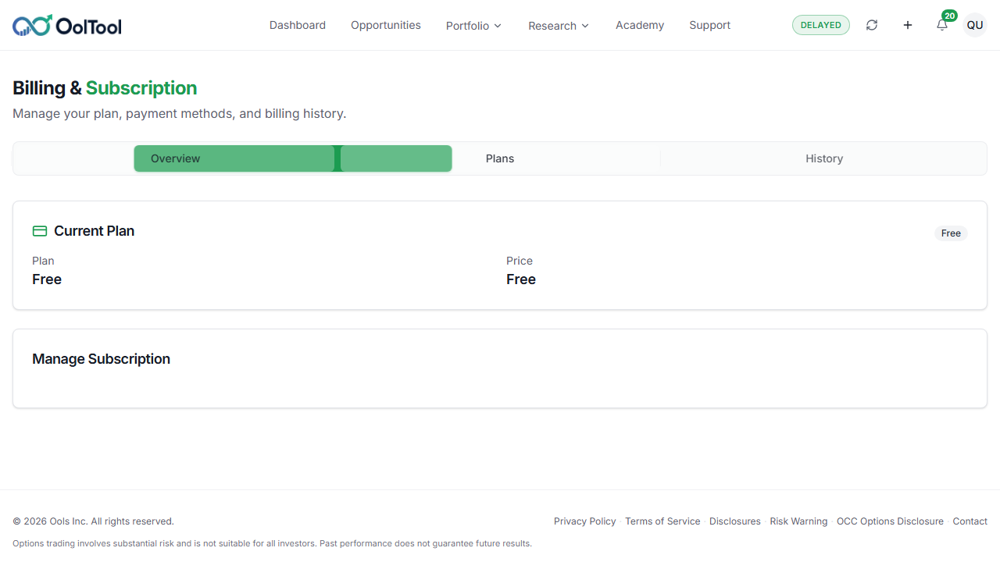

Critical journeys are not blocked
AIR shows whether this run is ready to ship, and what still needs a fix.
OOLTool · UAT
Can we ship?
CONDITIONAL GONo. 2 checks failed. Fix those before this goes out.
Last run 10/15/2026, 11:33:17 AM
More about this runWhy some checks did not run
Plan coverage
57 ran100% of 57 planned
Generated10/15/2026, 11:33:17 AM
Sourcejson-reporter
BuildPlaywright JSON
History30 executions
Decision
CONDITIONAL GO
- 57 tests executed; 57 in the inventory.
- 55 passed and 2 failed (executed pass rate 96%).
- 0 documented coverage gaps and 0 unexpected skip(s).
- Partial business journey status.
- Evidence is ready for review.
Next action ?
Review warnings and attached evidence before approval.
Why this call?
Why Conditional GO?
- Critical journeys are not blocked
- Warnings require review
- Release can proceed after evidence review
Why, and what to do next
Drivers
CONDITIONAL GO
What shaped the decision
Warnings require review
Release can proceed after evidence review
Blockers
2
What needs attention
Dashboard Widgets > Dashboard shows portfolio score events allocation and opportunities
Dashboard / Medium
failed
Billing Subscription Management > Billing portal plans invoices and return in one session
Billing / Medium
failed
Signals
MEDIUM
Impact and proof
Journey status requires release review.
Evidence is available for review.
Release-impacting failures need resolution.
Review release warnings, blocked coverage, and unexpected skips.
Workflow ?
What should happen next
Review warnings and attached evidence before approval.
Resolve Defects
Close release-impacting failures.
Re-run Failed Tests
Validate affected scenarios again.
Capture Evidence
Review attached proof.
Approve Release
Approve only after review gates pass.
Area status
Showing 8 of 8 areas
Accessibility
Healthy
2 passed. 0 failed. 0 did not run.
2Passed
0Failed
0Not run
No action required
Authentication
Healthy
24 passed. 0 failed. 0 did not run.
24Passed
0Failed
0Not run
Continue monitoring
Billing
Warning
4 passed. 1 failed. 0 did not run.
4Passed
1Failed
0Not run
1 failure need review
Dashboard
Warning
19 passed. 1 failed. 0 did not run.
19Passed
1Failed
0Not run
1 failure need review
MFA
Healthy
1 passed. 0 failed. 0 did not run.
1Passed
0Failed
0Not run
Continue monitoring
Onboarding
Healthy
2 passed. 0 failed. 0 did not run.
2Passed
0Failed
0Not run
Continue monitoring
Password
Healthy
2 passed. 0 failed. 0 did not run.
2Passed
0Failed
0Not run
Add reset-password expiry checks
Profile
Healthy
1 passed. 0 failed. 0 did not run.
1Passed
0Failed
0Not run
No action required
No matching areas found in this run.
Risk count
High2Failed areas
Medium0Not fully run
Low6Passed
Amber means a check was skipped unexpectedly, or an important path did not run.
Summary ?
6 of 8 areas are healthy. Billing and Dashboard failed.
Healthy6
Critical2
Not run0
Registration
0%
Not Executed
->
Authentication
100%
Healthy
->
Access Control
0%
Not Executed
->
Profile Setup
100%
Healthy
->
Risk Profile
100%
Healthy
->
Compliance
100%
Healthy
->
Subscription
80%
Warning
->
Payment
80%
Warning
->
Dashboard
95%
Warning
->
Session Security
0%
Not Executed
->
Accessibility
100%
Healthy
How much of each path ran
Bar height is the share of that path that ran in this execution.
0%
100%
0%
100%
100%
100%
100%
100%
100%
0%
100%
Answer
Most paths passed. Start with the failed checks before approving the release.
Email and payment steps that need an outside service are listed under Not run when they were skipped.
Choose an area
Stay on this page. Pick an area below.
All areas
Accessibility
Healthy
2 passed. 0 failed. 0 did not run.
Passed 2
Failed 0
Not run 0
Risk Low
Scenarios 3
Evidence 2 screenshots, 2 logs
Execution 12s
Keyboard navigation, focus order, and accessible validation behavior.
All areas
Authentication
Healthy
24 passed. 0 failed. 0 did not run.
Passed 24
Failed 0
Not run 0
Risk Low
Scenarios 5
Evidence 2 screenshots, 2 logs
Execution 4m 44s
Login, logout, forgot password, JWT/session behavior, and locked-account recovery.
All areas
Billing
Warning
4 passed. 1 failed. 0 did not run.
Passed 4
Failed 1
Not run 0
Risk Medium
Scenarios 5
Evidence 2 screenshots, 2 logs
Execution 2m 49s
Billing overview, plans, transaction history, invoice access, and PDF availability.
All areas
Dashboard
Warning
19 passed. 1 failed. 0 did not run.
Passed 19
Failed 1
Not run 0
Risk Medium
Scenarios 3
Evidence 2 screenshots, 2 logs
Execution 3m 48s
Dashboard load, refresh, and navigation into profile, billing, and risk pages.
All areas
MFA
Healthy
1 passed. 0 failed. 0 did not run.
Passed 1
Failed 0
Not run 0
Risk Low
Scenarios 3
Evidence 2 screenshots, 2 logs
Execution 19s
Authenticator, backup codes, and trusted-device checks that were actually run.
All areas
Onboarding
Healthy
2 passed. 0 failed. 0 did not run.
Passed 2
Failed 0
Not run 0
Risk Low
Scenarios 6
Evidence 2 screenshots, 2 logs
Execution 1m 28s
Subscriber registration, verification, risk profile, compliance, and payment handoff.
All areas
Password
Healthy
2 passed. 0 failed. 0 did not run.
Passed 2
Failed 0
Not run 0
Risk Low
Scenarios 4
Evidence 2 screenshots, 2 logs
Execution 34s
Password reset, mismatch handling, current-password validation, and policy enforcement.
All areas
Profile
Healthy
1 passed. 0 failed. 0 did not run.
Passed 1
Failed 0
Not run 0
Risk Low
Scenarios 3
Evidence 2 screenshots, 2 logs
Execution 11s
Profile page access, profile data loading, and read-only email protection.
All failure cards
What failed
Checks that failed for the same reason share one card. Open it to see each screen. The red box marks the control that failed.
All failure cards
Every failed check
| Check | Area | What happened | Picture |
|---|---|---|---|
| Dashboard shows portfolio score events allocation and opportunities | Dashboard | The button or message we looked for was not on the page.What to do: Put the missing button or message on the page, then rerun this check. | Open this group |
| Billing portal plans invoices and return in one session | Billing | Cancel subscription was not on the billing page.What to do: Open Billing for the no-card trial and look for Cancel subscription on Overview, Plans, and History. | Open this group |
The button or message we looked for was not on the page.1 check
FailedDashboard shows portfolio score events allocation and opportunities
The button or message we looked for was not on the page.

Cancel subscription was not on the billing page.1 check
FailedBilling portal plans invoices and return in one session
Cancel subscription was not on the billing page.

Choose a reason
Only the card you open is shown. Search finds one group.
Blocked
125checks
Need a product or admin change first.
Need a setup
0checks
Need an email, code, or prepared user.
Already covered
280checks
Checked by another test that did run.
Later
18checks
Not part of this release.
Need a look
0checks
Skipped without a clear reason.
Billing
81checks
Blocked. Need a product or admin change first
General
43checks
Blocked. Need a product or admin change first
Dashboard
1checks
Blocked. Need a product or admin change first
Billing
222checks
Traceability. Already checked by another test
General
29checks
Traceability. Already checked by another test
Password
10checks
Traceability. Already checked by another test
Dashboard
7checks
Traceability. Already checked by another test
Signup
5checks
Traceability. Already checked by another test
Profile
3checks
Traceability. Already checked by another test
Compliance
2checks
Traceability. Already checked by another test
Risk Profile
2checks
Traceability. Already checked by another test
General
10checks
Future. Planned for a later release
MFA
6checks
Future. Planned for a later release
Billing
1checks
Future. Planned for a later release
Dashboard
1checks
Future. Planned for a later release
No group matches that search.
Blocked
Billing
81checks
Need a product or admin change first
Notification and email events are captured for signup, trial, billing, unlock, and password reset
Requires email inbox/API access, notification test hooks, or message capture service.
Audit trail records security, billing, trial, and profile changes
Requires admin/API/DB access to audit log records.
No subscription charge during trial
Requires Stripe test account/API access to verify ledger/payment intent amount.
Billing starts automatically after with-card trial expiry
Requires Stripe invoice/payment validation after trial conversion.
Billing cycle resets after trial-to-paid subscription
Requires Stripe/API visibility for billing cycle anchor and renewal date.
Failed billing reminder is sent
Requires failed-payment fixture plus notification capture.
Paid subscription can be started from expired trial upgrade prompt
Requires expired-trial fixture or scheduler/API time control.
Successful purchase creates Stripe customer and subscription records
Requires Stripe sandbox API/admin access to validate customer/subscription objects.
Subscription purchase audit log is created
Requires admin/API/DB access to audit log records.
Expired checkout session cannot activate subscription
Requires expired checkout-session fixture or Stripe/API session control.
3DS or authentication-required card flow is handled without losing subscription context
Requires Stripe sandbox 3DS card fixture and confirmation handling rules.
Delayed Stripe webhook keeps subscription pending until payment confirmation is received
Requires webhook delay/retry control or backend subscription state API.
Failed upgrade payment does not change current plan
Needs a way to make the subscription card fail when charged. Tried through the browser: adding Stripe test card 4000000000000341 in the billing portal makes it the customer defa...
Declined card during upgrade shows payment failure message
An upgrade charges the saved card from a confirmation dialog (no Stripe card form), and a charge-failing card cannot be attached to the subscription through the browser (see SC-...
Incomplete payment details during upgrade are blocked
Not testable as written: the upgrade confirmation has no card fields (it charges the saved card), so there are no payment details to leave incomplete. Needs product confirmation...
Upgrade retry after failed payment starts clean retry flow
Needs a failed upgrade payment first (see SC-96) and confirmation of the intended retry behaviour.
Upgrade is blocked for cancelled subscription after access end date
Requires cancelled/expired subscription fixture.
Upgrade audit log is created
Requires admin/API/DB access to audit log records.
Upgrade webhook processing updates subscription status correctly
Requires webhook event visibility or backend state API.
Upgrade failure webhook does not unlock higher-tier entitlement
Requires failed upgrade webhook fixture and entitlement validation.
Downgrade from paid plan to Free is only available when business rules allow it
Requires confirmed business rule for paid-to-free downgrade and fixture account.
Downgrade applies lower-tier entitlements after effective date
Requires scheduler/time control and entitlement validation after effective date.
Downgrade handles existing broker connections above new plan limit
Requires broker connection seed data above target plan limit.
Downgrade handles portfolio positions above new plan limit
Requires portfolio position seed data above target plan limit.
Downgrade handles linked accounts above new plan limit
Requires linked-account seed data above target plan limit.
Downgrade from annual higher plan to annual lower plan is handled correctly
Requires annual higher-plan fixture and Stripe subscription schedule validation.
Downgrade from annual higher plan to monthly lower plan follows business rule
Requires confirmed interval-change rule and Stripe schedule validation.
Downgrade from monthly higher plan to annual lower plan follows business rule
Requires confirmed interval-change rule and Stripe proration/schedule validation.
Downgrade with pending cancellation follows correct precedence
Requires account fixture with scheduled cancellation plus downgrade eligibility rule.
Downgrade with unpaid invoice is blocked or handled correctly
Requires unpaid invoice fixture and expected business rule.
Downgrade with failed payment state is blocked or handled correctly
Requires failed-payment subscription fixture.
Downgrade audit log is created
Requires admin/API/DB access to audit log records.
Downgrade webhook updates subscription status correctly
Requires webhook event visibility or backend state API.
Downgrade failure webhook keeps current plan unchanged
Requires failed downgrade webhook fixture and entitlement validation.
Downgrade effective-date reminder notification is sent when configured
Requires scheduler control and notification capture.
Downgrade applies feature limits consistently across dashboard modules
Requires entitlement selectors across dashboard modules.
Downgrade handles broker integration removal or restriction according to rule
Requires broker integration data and confirmed retention/removal rule.
Downgrade handles bulk portfolio import availability according to target plan
Requires feature entitlement selectors for bulk portfolio load.
Downgrade handles analytics availability according to target plan
Requires analytics entitlement selectors and target-plan fixture.
Downgrade invoice or credit note is generated when applicable
Requires Stripe invoice/credit-note API visibility and confirmed billing rule.
Downgrade with currency conversion displays correct amount and currency
A downgrade is scheduled and collects no payment, so there is no amount to convert unless the product shows one. Needs product confirmation of what amount and currency a downgra...
Downgrade API rejects unauthorized or cross-account downgrade attempts
Requires backend/API support for authorization validation.
Failed payment during monthly-to-annual change keeps monthly billing active
Needs a way to make the subscription card fail when charged. Adding a charge-failing test card in the billing portal does not change the card the subscription charges, so the in...
Declined card during interval change shows payment failure
An interval change charges the saved card from a confirmation dialog (no Stripe card form), and a charge-failing card cannot be attached to the subscription through the browser...
Incomplete payment details during interval change are blocked
Not testable as written: the interval-change confirmation has no card fields (it charges the saved card), so there are no payment details to leave incomplete. Needs product conf...
Monthly-to-annual change is blocked for cancelled subscription after end date
Requires cancelled/expired subscription fixture.
Monthly-to-annual change follows rule for subscription scheduled to cancel
Requires scheduled-cancellation fixture and confirmed business rule.
Monthly-to-annual change audit log is created
Requires admin/API/DB access to audit log records.
Monthly-to-annual webhook updates billing interval correctly
Requires webhook event visibility or backend state API.
Monthly-to-annual failure webhook leaves monthly billing unchanged
Requires failed webhook fixture and billing state validation.
Monthly-to-annual change respects tax and currency configuration
Requires Stripe tax/currency API visibility.
Annual-to-monthly change records transaction history when charge or credit exists
Requires Stripe invoice/payment/credit visibility for interval change.
Invoice or credit note shows correct annual-to-monthly amount
Requires Stripe invoice/credit-note API and deterministic amount validation.
Failed payment during annual-to-monthly change keeps annual billing active
Requires failed-payment fixture and post-failure billing state validation.
Declined card during annual-to-monthly change shows payment failure
A declined card needs a charge-failing card on the subscription, which cannot be set through the browser (see SC-183). Annual-to-monthly is also scheduled for the next renewal,...
Incomplete payment details during annual-to-monthly change are blocked
Not testable as written: the annual-to-monthly change has no card fields, so there are no payment details to leave incomplete. Needs product confirmation of the intended behaviour.
Annual-to-monthly change is blocked for cancelled subscription after end date
Requires cancelled/expired subscription fixture.
Annual-to-monthly change follows rule for subscription scheduled to cancel
Requires scheduled-cancellation fixture and confirmed business rule.
Annual-to-monthly change audit log is created
Requires admin/API/DB access to audit log records.
Annual-to-monthly webhook updates billing interval correctly
Requires webhook event visibility or backend state API.
Annual-to-monthly failure webhook leaves annual billing unchanged
Requires failed webhook fixture and billing state validation.
Annual-to-monthly change respects tax and currency configuration
Requires Stripe tax/currency API visibility.
Annual-to-monthly API rejects unauthorized or cross-account interval changes
Requires backend/API support for authorization validation.
Cancellation reason is captured for audit or analytics
Requires admin/API access to cancellation metadata.
Refund action is restricted to authorized admin workflow
Requires admin permissions and refund test fixture.
Paid feature entitlement is removed after billing period ends
Requires time-travel, webhook simulation, or backend fixture.
Subscription with unpaid invoice follows configured cancellation rule
Requires unpaid invoice fixture.
Pending upgrade is handled before cancellation
Requires pending upgrade fixture.
Cancellation portal deep link requires authenticated customer session
Requires secure portal deep-link fixture.
Unauthorized cross-account cancellation is blocked by backend
Requires backend/API authorization test support.
Stripe cancellation webhook updates cancel-at-period-end state
Requires webhook simulation or Stripe event fixture.
Webhook retry does not duplicate cancellation records
Requires webhook idempotency test support.
Cancellation reason analytics can be reviewed by admin
Requires admin analytics access.
Renewal payment failure changes subscription to past-due state
Requires Stripe renewal failure webhook fixture.
Updating payment method recovers past-due subscription
Requires past-due fixture and Stripe portal recovery flow.
Final failed renewal cancels or downgrades subscription according to policy
Requires dunning policy decision and backend fixture.
customer.subscription.updated webhook updates billing status
Requires webhook simulation or backend integration test.
invoice.payment_succeeded webhook recovers subscription
Requires webhook simulation or backend integration test.
Failed payment after interval change keeps previous billing interval
Needs a way to make the subscription card fail when charged (see SC-183). Requires Stripe API access or an app-side test hook.
Tax calculation failure prevents incorrect subscription activation
Requires backend/Stripe tax failure simulation.
Billing overview shows past-due or payment issue state
Requires past-due account fixture.
Blocked
General
43checks
Need a product or admin change first
Same payment method cannot receive another trial
Requires Stripe payment-method fingerprint visibility through API/admin.
Trial lasts exactly 30 days
Requires admin/API time travel or scheduler controls to set trial start/end dates.
Day 25 no-card reminder is sent once
Requires scheduler trigger and email/in-app notification capture.
Day 28 no-card reminder is sent once
Requires scheduler trigger and email/in-app notification capture.
Day 29 no-card final reminder is sent once
Requires scheduler trigger and email/in-app notification capture.
Day 29 with-card final reminder is sent once
Requires scheduler trigger and email/in-app notification capture.
No-card trial downgrades to Free after expiry
Requires admin/API expiry control or scheduler trigger for trial expiry.
Broker integrations disconnect after no-card expiry
Requires expired trial fixture plus broker connection data.
Imported portfolio positions are deleted after no-card expiry
Requires portfolio seed data and DB/admin validation of deletion.
Premium features are unavailable after expiry
Requires expired trial fixture and feature entitlement selectors.
Subscribe prompt appears after trial expiry
Requires expired trial fixture.
With-card trial converts to paid after expiry
Requires trial expiry scheduler plus Stripe subscription/invoice validation.
Failed payment after trial expiry enters grace period
Requires trial expiry, failed renewal card fixture, scheduler/webhook control, and grace-period config.
Trial conversion audit log is created
Requires admin/API/DB access to audit log records after trial conversion.
Reminder analytics are tracked
Requires analytics/admin event visibility.
Failed renewal creates an unpaid invoice
Requires failed renewal invoice fixture.
First dunning email is sent after failed renewal
Requires mailbox access and failed renewal fixture.
Retry schedule follows configured dunning cadence
Requires time-controlled retry scheduler or backend API.
Grace period starts after failed renewal
Requires billing status fixture and entitlement API.
Paid access is retained during configured grace period
Requires grace-period entitlement fixture.
Paid access is restricted after grace period expires
Requires time-travel or backend state fixture.
Successful retry marks failed invoice as paid
Requires retry payment success webhook fixture.
Repeated failed retries do not duplicate invoice records
Requires webhook idempotency validation.
In-app failed payment notification is displayed
Requires past-due account fixture.
invoice.payment_failed webhook is processed correctly
Requires webhook simulation or backend integration test.
Duplicate webhook delivery is idempotent
Requires webhook replay support.
Failed payment creates audit log entry
Requires admin/API audit log access.
Payment recovery creates audit log entry
Requires admin/API audit log access.
Dunning email includes plan name and failed amount
Requires mailbox access and failed payment fixture.
Dunning email includes update payment link
Requires mailbox access and failed payment fixture.
Expired payment update link is handled clearly
Requires expired portal session fixture.
Unauthorized payment update attempt is blocked
Requires backend/API authorization validation.
Failed payment after upgrade keeps previous plan active
Needs a way to make the subscription card fail when charged (see SC-96). Requires Stripe API access or an app-side test hook.
Admin can retry failed payment when supported
Requires admin billing management support.
Removed payment method before renewal triggers failed payment flow
Requires saved payment method removal fixture.
Expired saved card renewal follows dunning flow
Requires saved expired-card renewal fixture.
Invalid country or currency setup is handled safely
Requires Stripe/customer currency fixture.
Unpaid invoice PDF or invoice view is available when configured
Requires unpaid invoice fixture.
Paid-after-retry invoice PDF opens successfully
Requires recovered invoice fixture.
Transaction history shows failed payment status
Requires failed payment fixture visible in app history.
Feature access remains correct during payment grace period
Requires grace-period entitlement fixture.
Feature access is restricted after payment suspension
Requires suspended account fixture.
Dunning retry configuration is validated against admin settings
Requires admin dunning configuration API or UI fixture.
Blocked
Dashboard
1checks
Need a product or admin change first
Dashboard banner warns user about payment issue
Requires past-due account fixture.
Traceability
Billing
222checks
Already checked by another test
Curious Explorer free plan completes onboarding without Stripe checkout
Documented matrix scenario. Covered by PlanSelectionValidation.spec.ts, but it was not included in this AIR execution.
Paid plan selection redirects to Stripe checkout and accepts sandbox card details
Documented matrix scenario. Covered by onboarding.spec.ts and DirectSubscriptionPurchase.spec.ts, but it was not included in this AIR execution.
Stripe checkout validates incomplete, expired, invalid CVC, and declined-card scenarios
Documented matrix scenario. Covered by PaymentNegative.spec.ts and OverlayStrategistsTrial.spec.ts, but it was not included in this AIR execution.
Billing overview displays current plan, active status, billing interval, and next renewal
Documented matrix scenario. Covered by BillingEdgeValidation.spec.ts, but it was not included in this AIR execution.
Billing plans show upgrade, downgrade, or current-plan status controls
Documented matrix scenario. Covered by BillingEdgeValidation.spec.ts, but it was not included in this AIR execution.
Subscription history, transaction history, invoice page, and PDF link are available
Documented matrix scenario. Covered by BillingEdgeValidation.spec.ts, but it was not included in this AIR execution.
Manage subscription opens Stripe portal with subscription and payment details
Documented matrix scenario. Covered by BillingSubscriptionManagement.spec.ts, but it was not included in this AIR execution.
Stripe portal cancel-subscription form accepts reason and feedback without accidental cancellation
Documented matrix scenario. Covered by BillingSubscriptionManagement.spec.ts, but it was not included in this AIR execution.
Cancelled subscription retains access until end of billing cycle
Documented matrix scenario. Covered by SubscriptionLifecycleExecution.spec.ts > retains access until end of billing cycle, but it was not included in this AIR execution.
New user can purchase Income Builder monthly subscription during onboarding
Documented matrix scenario. Covered by onboarding.spec.ts > Income Builder Stripe checkout payment completion, but it was not included in this AIR execution.
Income Builder monthly checkout shows selected plan before payment
Documented matrix scenario. Covered by DirectSubscriptionPurchase.spec.ts > Income Builder monthly checkout shows subscription summary before payment, but it was not included in...
Portfolio Hedger annual checkout shows selected plan before payment
Documented matrix scenario. Covered by DirectSubscriptionPurchase.spec.ts > Portfolio Hedger annual checkout shows subscription summary before payment, but it was not included i...
Annual paid checkout displays selected plan and billing interval before payment
Documented matrix scenario. Covered by DirectSubscriptionPurchase.spec.ts > Income Builder annual and Portfolio Hedger annual checkout summaries before payment, but it was not i...
Paid subscription can be started from onboarding plan selection
Documented matrix scenario. Covered by PlanSelectionValidation.spec.ts > User can switch plan selections without launching Stripe checkout; onboarding.spec.ts, DirectSubscriptio...
Paid subscription can be started from pricing entry point
Documented matrix scenario. Covered by DirectSubscriptionPurchase.spec.ts > paid plan checkout starts from the pricing catalog and returns before payment, but it was not include...
Paid subscription can be started from billing/settings plan action
Documented matrix scenario. Covered by BillingSubscriptionManagement.spec.ts > Billing plans show plan action or status controls, but it was not included in this AIR execution.
Stripe checkout displays subscriber email
Documented matrix scenario. Covered by DirectSubscriptionPurchase.spec.ts > validateSubscriptionCheckoutDetails, but it was not included in this AIR execution.
Stripe checkout displays selected plan name
Documented matrix scenario. Covered by DirectSubscriptionPurchase.spec.ts > validateSubscriptionCheckoutDetails, but it was not included in this AIR execution.
Stripe checkout displays correct billing interval
Documented matrix scenario. Covered by DirectSubscriptionPurchase.spec.ts > validateSubscriptionCheckoutDetails, but it was not included in this AIR execution.
Stripe checkout displays renewal or auto-renewal copy before payment
Documented matrix scenario. Covered by DirectSubscriptionPurchase.spec.ts > validateSubscriptionCheckoutDetails, but it was not included in this AIR execution.
Stripe checkout exposes card number, expiry, CVC, country, and cardholder name fields
Documented matrix scenario. Covered by DirectSubscriptionPurchase.spec.ts and PaymentNegative.spec.ts, but it was not included in this AIR execution.
Successful sandbox card payment activates subscription
Documented matrix scenario. Covered by onboarding.spec.ts > Stripe checkout payment completion, but it was not included in this AIR execution.
Successful payment redirects user back to OOLTool dashboard
Documented matrix scenario. Covered by onboarding.spec.ts and OverlayStrategistsTrial.spec.ts, but it was not included in this AIR execution.
Dashboard shows active subscription after successful purchase
Documented matrix scenario. Covered by Subscriber.spec.ts, but it was not included in this AIR execution.
Billing overview shows current paid plan and active status
Documented matrix scenario. Covered by BillingSubscriptionManagement.spec.ts, but it was not included in this AIR execution.
Transaction history records successful paid invoice
Documented matrix scenario. Covered by Subscriber.spec.ts > Transactions tab paid status, but it was not included in this AIR execution.
Invoice details page opens after successful purchase
Documented matrix scenario. Covered by Subscriber.spec.ts > Invoice page opens successfully, but it was not included in this AIR execution.
Invoice PDF link is available after successful purchase
Documented matrix scenario. Covered by Subscriber.spec.ts > Invoice PDF link is available and opens, but it was not included in this AIR execution.
Incomplete card number is blocked in Stripe checkout
Documented matrix scenario. Covered by PaymentNegative.spec.ts > Stripe Checkout blocks incomplete card number, but it was not included in this AIR execution.
Expired card date is blocked in Stripe checkout
Documented matrix scenario. Covered by PaymentNegative.spec.ts > Stripe Checkout blocks expired card date, but it was not included in this AIR execution.
Invalid CVC is blocked in Stripe checkout
Documented matrix scenario. Covered by PaymentNegative.spec.ts > Stripe Checkout blocks invalid CVC, but it was not included in this AIR execution.
Declined card does not activate subscription
Documented matrix scenario. Covered by PaymentNegative.spec.ts and OverlayStrategistsTrial.spec.ts, but it was not included in this AIR execution.
Missing cardholder name is blocked before subscription activation
Documented matrix scenario. Covered by scenario:PURCHASE_DOUBLE_CLICK_INCOME_MONTHLY:missing-cardholder-name-blocked, but it was not included in this AIR execution.
Failed checkout keeps user without active paid subscription
Documented matrix scenario. Covered by scenario:PURCHASE_DOUBLE_CLICK_INCOME_MONTHLY:declined-card-keeps-user-unpaid, but it was not included in this AIR execution.
Closing Stripe checkout returns user safely without activating subscription
Documented matrix scenario. Covered by scenario:PURCHASE_DOUBLE_CLICK_INCOME_MONTHLY:closing-checkout-returns-safely, but it was not included in this AIR execution.
Payment currency and conversion details are displayed correctly
Documented matrix scenario. Covered by DirectSubscriptionPurchase.spec.ts > Income Builder checkout shows currency and conversion details before payment, but it was not included...
Successful subscription confirmation email is sent
Documented matrix scenario. Covered by scenario:PURCHASE_INCOME_MONTHLY:confirmation-email, but it was not included in this AIR execution.
Manage subscription portal opens for newly purchased subscription
Documented matrix scenario. Covered by BillingSubscriptionManagement.spec.ts > Manage subscription opens Stripe portal with subscription details, but it was not included in this...
Stripe portal shows current subscription and payment method
Documented matrix scenario. Covered by BillingSubscriptionManagement.spec.ts > validateStripePortalSession, but it was not included in this AIR execution.
Stripe portal invoice history is available
Documented matrix scenario. Covered by BillingSubscriptionManagement.spec.ts > validateStripePortalSession, but it was not included in this AIR execution.
Stripe portal return link navigates back to OOLTool
Documented matrix scenario. Covered by BillingSubscriptionManagement.spec.ts > validateStripePortalSession, but it was not included in this AIR execution.
Cancel subscription form accepts reason and feedback without final cancellation
Documented matrix scenario. Covered by BillingSubscriptionManagement.spec.ts > Cancel subscription form accepts reason and feedback without cancelling, but it was not included i...
Duplicate checkout session cannot create duplicate paid subscriptions
Documented matrix scenario. Covered by scenario:PURCHASE_INCOME_MONTHLY:finished-checkout-not-reusable, but it was not included in this AIR execution.
Retry after failed payment starts a clean checkout session
Documented matrix scenario. Covered by scenario:PURCHASE_DOUBLE_CLICK_INCOME_MONTHLY:retry-starts-clean-checkout, but it was not included in this AIR execution.
Terms and subscription terms must be accepted before paid checkout starts
Documented matrix scenario. Covered by PlanSelectionValidation.spec.ts and OverlayStrategistsTrial.spec.ts, but it was not included in this AIR execution.
Double-clicking purchase does not create duplicate checkout sessions
Documented matrix scenario. Covered by scenario:PURCHASE_DOUBLE_CLICK_INCOME_MONTHLY:single-checkout-request, but it was not included in this AIR execution.
Browser back from Stripe checkout returns without activating subscription
Documented matrix scenario. Covered by DirectSubscriptionPurchase.spec.ts > Income Builder checkout preserves context on refresh and returns safely before payment, but it was no...
Refreshing Stripe checkout keeps selected plan and customer context
Documented matrix scenario. Covered by DirectSubscriptionPurchase.spec.ts > Income Builder checkout preserves context on refresh and returns safely before payment, but it was no...
User cannot access paid entitlements before successful payment confirmation
Documented matrix scenario. Covered by DirectSubscriptionPurchase.spec.ts > checkout return leaves the subscription unpaid, but it was not included in this AIR execution.
Payment receipt or subscription confirmation email is received after purchase
Documented matrix scenario. Covered by scenario:PURCHASE_INCOME_MONTHLY:receipt-email, but it was not included in this AIR execution.
Invoice PDF amount, currency, and plan match the purchased subscription
Documented matrix scenario. Covered by scenario:PURCHASE_INCOME_MONTHLY:invoice-matches-purchase, but it was not included in this AIR execution.
Saved payment method last four digits are shown correctly after purchase
Documented matrix scenario. Covered by BillingSubscriptionManagement.spec.ts > Stripe portal shows current subscription and payment method, but it was not included in this AIR e...
Currency and conversion-fee copy remains visible for non-USD checkout
Documented matrix scenario. Covered by DirectSubscriptionPurchase.spec.ts > Income Builder checkout shows currency and conversion details before payment, but it was not included...
Current lower-tier paid subscription is displayed before upgrade
Documented matrix scenario. Covered by BillingSubscriptionManagement.spec.ts > Manage subscription opens Stripe portal with subscription details, but it was not included in this...
Eligible higher-tier plans show upgrade action
Documented matrix scenario. Covered by BillingEdgeValidation.spec.ts > Billing plans expose lifecycle action summary without changing subscription, but it was not included in th...
Current plan does not show upgrade action for itself
Documented matrix scenario. Covered by BillingEdgeValidation.spec.ts > Billing plans expose lifecycle action summary without changing subscription, but it was not included in th...
Upgrade from Income Builder to Overlay Strategists is available
Documented matrix scenario. Covered by SubscriptionLifecycleExecution.spec.ts > paid plan ladder availability Income Builder upgrade to Overlay Strategists, but it was not inclu...
Upgrade from Overlay Strategists to Portfolio Hedger is available
Documented matrix scenario. Covered by SubscriptionLifecycleExecution.spec.ts > paid plan ladder availability Overlay Strategists upgrade to Portfolio Hedger, but it was not inc...
Upgrade CTA opens Stripe checkout or customer portal update screen
Documented matrix scenario. Covered by SubscriptionLifecycleExecution.spec.ts > Prepared paid user can preview monthly and annual upgrade calculations, but it was not included i...
Upgrade screen displays current plan and target plan
Documented matrix scenario. Covered by SubscriptionLifecycleExecution.spec.ts > upgrade calculation preview shows target plan, but it was not included in this AIR execution.
Upgrade screen displays new price and billing interval
Documented matrix scenario. Covered by SubscriptionLifecycleExecution.spec.ts > upgrade calculation preview validates plan charge and interval copy, but it was not included in t...
Upgrade screen displays prorated amount before confirmation
Documented matrix scenario. Covered by SubscriptionLifecycleExecution.spec.ts > upgrade preview validates unused-time credit and amount due today. Stripe invoice-ID reconciliati...
Upgrade starts a new billing cycle and displays next renewal date
Documented matrix scenario. Covered by Upgrade payment starts a new billing cycle immediately, but it was not included in this AIR execution.
User can cancel upgrade before payment confirmation
Documented matrix scenario. Covered by SubscriptionLifecycleExecution.spec.ts > upgrade calculation preview is closed without submitting, but it was not included in this AIR exe...
Successful upgrade immediately updates active plan
Documented matrix scenario. Covered by Successful upgrade records subscription history entry and shows the new plan, but it was not included in this AIR execution.
Successful upgrade unlocks target-plan entitlements
Documented matrix scenario. Covered by scenario:UPGRADE_INCOME_MONTHLY_TO_OVERLAY_MONTHLY:target-plan-active, but it was not included in this AIR execution.
Successful upgrade keeps existing user data and portfolio data
Documented matrix scenario. Covered by scenario:UPGRADE_INCOME_MONTHLY_TO_OVERLAY_MONTHLY:user-data-preserved, but it was not included in this AIR execution.
Successful upgrade records subscription history entry
Documented matrix scenario. Covered by SubscriptionLifecycleExecution.spec.ts > records subscription history, but it was not included in this AIR execution.
Successful upgrade records transaction history entry
Documented matrix scenario. Covered by scenario:UPGRADE_INCOME_MONTHLY_TO_OVERLAY_MONTHLY:transaction-paid-entry, but it was not included in this AIR execution.
Successful upgrade creates invoice with correct prorated amount
Documented matrix scenario. Covered by scenario:UPGRADE_INCOME_MONTHLY_TO_OVERLAY_MONTHLY:invoice-amount, but it was not included in this AIR execution.
Upgrade invoice PDF opens and matches plan change details
Documented matrix scenario. Covered by scenario:UPGRADE_INCOME_MONTHLY_TO_OVERLAY_MONTHLY:invoice-pdf-opens, but it was not included in this AIR execution.
Upgrade confirmation email is sent
Documented matrix scenario. Covered by scenario:UPGRADE_INCOME_MONTHLY_TO_OVERLAY_MONTHLY:confirmation-email, but it was not included in this AIR execution.
Upgrade from monthly lower plan to monthly higher plan is handled correctly
Documented matrix scenario. Covered by scenario:UPGRADE_INCOME_MONTHLY_TO_OVERLAY_MONTHLY:target-plan-active, but it was not included in this AIR execution.
Upgrade from annual lower plan to annual higher plan is handled correctly
Documented matrix scenario. Covered by scenario:UPGRADE_INCOME_ANNUAL_TO_OVERLAY_ANNUAL:target-plan-active, but it was not included in this AIR execution.
Upgrade from monthly lower plan to annual higher plan is handled correctly
Documented matrix scenario. Covered by scenario:UPGRADE_INCOME_MONTHLY_TO_OVERLAY_ANNUAL:target-plan-active, but it was not included in this AIR execution.
Upgrade preserves billing customer and payment method
Documented matrix scenario. Covered by scenario:UPGRADE_INCOME_MONTHLY_TO_OVERLAY_MONTHLY:saved-card-preserved, but it was not included in this AIR execution.
Upgrade does not create duplicate active subscriptions
Documented matrix scenario. Covered by scenario:UPGRADE_INCOME_MONTHLY_TO_OVERLAY_MONTHLY:single-active-plan, but it was not included in this AIR execution.
Double-clicking upgrade action is idempotent
Documented matrix scenario. Covered by scenario:UPGRADE_DOUBLE_CLICK_INCOME_TO_OVERLAY:single-upgrade-request, but it was not included in this AIR execution.
Browser refresh during upgrade confirmation does not charge or change the plan
Documented matrix scenario. Covered by scenario:INTERVAL_INCOME_MONTHLY_TO_ANNUAL:refresh-leaves-account-unchanged-upgrade, but it was not included in this AIR execution.
Browser back from upgrade checkout returns without changing plan
Documented matrix scenario. Covered by SubscriptionLifecycleExecution.spec.ts > upgrade preview cancel returns without changing plan, but it was not included in this AIR execution.
Upgrade is available for subscription scheduled to cancel before end date when allowed
Documented matrix scenario. Covered by scenario:CANCEL_INCOME_MONTHLY_AT_PERIOD_END:upgrade-allowed-before-end-date, but it was not included in this AIR execution.
Current higher-tier subscription is displayed before downgrade
Documented matrix scenario. Covered by BillingSubscriptionManagement.spec.ts > Manage subscription opens Stripe portal with subscription details, but it was not included in this...
Eligible lower-tier plans show downgrade action
Documented matrix scenario. Covered by BillingEdgeValidation.spec.ts > Billing plans expose lifecycle action summary without changing subscription, but it was not included in th...
Current plan does not show downgrade action for itself
Documented matrix scenario. Covered by BillingEdgeValidation.spec.ts > Billing plans expose lifecycle action summary without changing subscription, but it was not included in th...
Downgrade from Portfolio Hedger to Overlay Strategists is available
Documented matrix scenario. Covered by SubscriptionLifecycleExecution.spec.ts > paid plan ladder availability Portfolio Hedger downgrade to Overlay Strategists, but it was not i...
Downgrade from Overlay Strategists to Income Builder is available
Documented matrix scenario. Covered by SubscriptionLifecycleExecution.spec.ts > paid plan ladder availability Overlay Strategists downgrade to Income Builder, but it was not inc...
Downgrade confirmation displays current plan and target plan
Documented matrix scenario. Covered by SubscriptionLifecycleExecution.spec.ts > Prepared paid user can preview downgrade calculations without submitting, but it was not included...
Downgrade confirmation displays lost feature warning
Documented matrix scenario. Covered by scenario:DOWNGRADE_OVERLAY_TO_INCOME_MONTHLY:impact-warning, but it was not included in this AIR execution.
Downgrade confirmation displays account limits after downgrade
Documented matrix scenario. Covered by scenario:DOWNGRADE_OVERLAY_TO_INCOME_MONTHLY:account-limits-shown, but it was not included in this AIR execution.
Downgrade requires user acknowledgement before confirmation
Documented matrix scenario. Covered by SubscriptionLifecycleExecution.spec.ts > downgrade preview terms checkbox is required before Confirm & pay, but it was not included in thi...
User can cancel downgrade before confirmation
Documented matrix scenario. Covered by SubscriptionLifecycleExecution.spec.ts > downgrade preview is closed without submitting, but it was not included in this AIR execution.
Downgrade is scheduled for end of current billing cycle when applicable
Documented matrix scenario. Covered by scenario:DOWNGRADE_OVERLAY_TO_INCOME_MONTHLY:schedule-at-renewal, but it was not included in this AIR execution.
Immediate downgrade is blocked or allowed according to business rules
Documented matrix scenario. Covered by scenario:DOWNGRADE_OVERLAY_TO_INCOME_MONTHLY:access-kept-until-effective-date, but it was not included in this AIR execution.
Downgrade keeps current higher-tier access until effective date
Documented matrix scenario. Covered by scenario:DOWNGRADE_OVERLAY_TO_INCOME_MONTHLY:access-kept-until-effective-date, but it was not included in this AIR execution.
Downgrade does not delete user account data immediately
Documented matrix scenario. Covered by scenario:DOWNGRADE_OVERLAY_TO_INCOME_MONTHLY:user-data-preserved, but it was not included in this AIR execution.
Downgrade warning clearly explains restricted features
Documented matrix scenario. Covered by scenario:DOWNGRADE_OVERLAY_TO_INCOME_MONTHLY:impact-warning, but it was not included in this AIR execution.
Downgrade from monthly higher plan to monthly lower plan is handled correctly
Documented matrix scenario. Covered by scenario:DOWNGRADE_OVERLAY_TO_INCOME_MONTHLY:schedule-at-renewal, but it was not included in this AIR execution.
Scheduled downgrade appears in billing overview
Documented matrix scenario. Covered by scenario:DOWNGRADE_OVERLAY_TO_INCOME_MONTHLY:scheduled-downgrade-in-overview, but it was not included in this AIR execution.
Scheduled downgrade appears on the Plans screen
Documented matrix scenario. Covered by scenario:DOWNGRADE_OVERLAY_TO_INCOME_MONTHLY:scheduled-downgrade-on-plans-screen, but it was not included in this AIR execution.
Downgrade confirmation email is sent
Documented matrix scenario. Covered by scenario:DOWNGRADE_OVERLAY_TO_INCOME_MONTHLY:confirmation-email, but it was not included in this AIR execution.
User can resume or cancel scheduled downgrade before effective date when allowed
Documented matrix scenario. Covered by scenario:DOWNGRADE_OVERLAY_TO_INCOME_MONTHLY:cancel-scheduled-downgrade, but it was not included in this AIR execution.
Cancelling scheduled downgrade keeps current plan active
Documented matrix scenario. Covered by scenario:DOWNGRADE_OVERLAY_TO_INCOME_MONTHLY:cancel-scheduled-downgrade, but it was not included in this AIR execution.
Double-clicking downgrade confirmation is idempotent
Documented matrix scenario. Covered by scenario:DOWNGRADE_DOUBLE_CLICK_OVERLAY_TO_INCOME:single-downgrade-request, but it was not included in this AIR execution.
Browser refresh during downgrade confirmation does not charge or change the plan
Documented matrix scenario. Covered by scenario:UPGRADE_INCOME_MONTHLY_TO_OVERLAY_MONTHLY:refresh-leaves-account-unchanged-downgrade, but it was not included in this AIR execution.
Browser back from downgrade flow does not change plan
Documented matrix scenario. Covered by SubscriptionLifecycleExecution.spec.ts > downgrade preview back does not change plan, but it was not included in this AIR execution.
Downgrade is not available to users without active paid subscription
Documented matrix scenario. Covered by PlanSelectionValidation.spec.ts > unpaid plan catalog has no downgrade action, but it was not included in this AIR execution.
Downgrade target excludes plans that are not lower tier
Documented matrix scenario. Covered by BillingEdgeValidation.spec.ts > downgrade target ladder excludes higher plans, but it was not included in this AIR execution.
Downgrade preserves billing customer and saved payment method
Documented matrix scenario. Covered by scenario:DOWNGRADE_OVERLAY_TO_INCOME_MONTHLY:saved-card-preserved, but it was not included in this AIR execution.
Downgrade does not create duplicate subscription records
Documented matrix scenario. Covered by scenario:DOWNGRADE_OVERLAY_TO_INCOME_MONTHLY:single-active-plan, but it was not included in this AIR execution.
Downgrade can be reported correctly in AIR evidence and history
Documented matrix scenario. Covered by air:downgrade-history, but it was not included in this AIR execution.
Monthly plan subscriber sees annual billing option
Documented matrix scenario. Covered by PlanSelectionValidation.spec.ts > Monthly and Annual pricing toggle, but it was not included in this AIR execution.
Current monthly plan is clearly identified before annual switch
Documented matrix scenario. Covered by BillingEdgeValidation.spec.ts > Billing plans expose billing interval summary without changing subscription, but it was not included in th...
Annual price is displayed for the same subscription tier
Documented matrix scenario. Covered by PlanSelectionValidation.spec.ts > Monthly and Annual pricing toggle, but it was not included in this AIR execution.
Annual switch action is available only for active monthly subscriptions
Documented matrix scenario. Covered by SubscriptionLifecycleExecution.spec.ts > Prepared paid user can preview billing interval change without submitting. Enable SUB_LIFECYCLE_I...
Annual switch is not shown for already annual subscription
Documented matrix scenario. Covered by SubscriptionLifecycleExecution.spec.ts > paid plan ladder availability annual plan hides switch to annual, but it was not included in this...
Annual switch confirmation displays current monthly plan and target annual plan
Documented matrix scenario. Covered by SubscriptionLifecycleExecution.spec.ts > interval preview shows target plan and annual billing copy, but it was not included in this AIR e...
Annual switch confirmation displays yearly amount
Documented matrix scenario. Covered by SubscriptionLifecycleExecution.spec.ts > interval preview validates annual plan charge and recurring amount, but it was not included in th...
Annual switch confirmation displays prorated credit or charge
Documented matrix scenario. Covered by SubscriptionLifecycleExecution.spec.ts > interval preview validates unused-time credit and amount due today. Stripe invoice-ID reconciliat...
Annual switch confirmation displays next renewal date
Documented matrix scenario. Covered by SubscriptionLifecycleExecution.spec.ts > interval preview asserts next billing date copy, but it was not included in this AIR execution.
User can cancel monthly-to-annual change before confirmation
Documented matrix scenario. Covered by SubscriptionLifecycleExecution.spec.ts > interval preview is closed without submitting, but it was not included in this AIR execution.
Successful monthly-to-annual change updates billing interval
Documented matrix scenario. Covered by monthly-to-annual billing change is immediate for Income Builder, but it was not included in this AIR execution.
Successful monthly-to-annual change preserves same plan tier
Documented matrix scenario. Covered by monthly-to-annual billing change is immediate and keeps Income Builder, but it was not included in this AIR execution.
Successful monthly-to-annual change preserves entitlements
Documented matrix scenario. Covered by scenario:INTERVAL_INCOME_MONTHLY_TO_ANNUAL:entitlements-preserved, but it was not included in this AIR execution.
Successful monthly-to-annual change records subscription history
Documented matrix scenario. Covered by scenario:INTERVAL_INCOME_MONTHLY_TO_ANNUAL:subscription-history, but it was not included in this AIR execution.
Successful monthly-to-annual change records transaction history when charge exists
Documented matrix scenario. Covered by scenario:INTERVAL_INCOME_MONTHLY_TO_ANNUAL:transaction-history, but it was not included in this AIR execution.
Invoice or receipt shows correct annual amount after interval change
Documented matrix scenario. Covered by scenario:INTERVAL_INCOME_MONTHLY_TO_ANNUAL:annual-amount, but it was not included in this AIR execution.
Invoice PDF opens after monthly-to-annual change
Documented matrix scenario. Covered by scenario:INTERVAL_INCOME_MONTHLY_TO_ANNUAL:invoice-pdf-opens, but it was not included in this AIR execution.
Confirmation email is sent after monthly-to-annual change
Documented matrix scenario. Covered by scenario:INTERVAL_INCOME_MONTHLY_TO_ANNUAL:confirmation-email, but it was not included in this AIR execution.
Double-clicking annual switch confirmation is idempotent
Documented matrix scenario. Covered by scenario:INTERVAL_DOUBLE_CLICK_MONTHLY_TO_ANNUAL:single-switch-request, but it was not included in this AIR execution.
Browser refresh during monthly-to-annual confirmation does not charge or change the plan
Documented matrix scenario. Covered by scenario:PURCHASE_INCOME_MONTHLY:refresh-leaves-account-unchanged-annual, but it was not included in this AIR execution.
Browser back from interval-change checkout returns without changing billing interval
Documented matrix scenario. Covered by SubscriptionLifecycleExecution.spec.ts > interval preview checkout back does not change billing interval, but it was not included in this...
Monthly-to-annual change preserves Stripe customer and payment method
Documented matrix scenario. Covered by scenario:INTERVAL_INCOME_MONTHLY_TO_ANNUAL:saved-card-preserved, but it was not included in this AIR execution.
Monthly-to-annual change does not create duplicate active subscriptions
Documented matrix scenario. Covered by scenario:INTERVAL_INCOME_MONTHLY_TO_ANNUAL:single-active-plan, but it was not included in this AIR execution.
Monthly-to-annual change keeps billing portal return link working
Documented matrix scenario. Covered by BillingSubscriptionManagement.spec.ts > Stripe portal return link opens application content, but it was not included in this AIR execution.
Monthly-to-annual change can be represented in AIR history
Documented matrix scenario. Covered by air:monthly-to-annual-history, but it was not included in this AIR execution.
Monthly-to-annual matrix coverage is visible in AIR blocked/skipped coverage
Documented matrix scenario. Covered by air:monthly-annual-gap-coverage, but it was not included in this AIR execution.
Annual plan subscriber sees monthly billing option
Documented matrix scenario. Covered by PlanSelectionValidation.spec.ts > Monthly and Annual pricing toggle, but it was not included in this AIR execution.
Current annual plan is clearly identified before monthly switch
Documented matrix scenario. Covered by BillingEdgeValidation.spec.ts > Billing plans expose billing interval summary without changing subscription, but it was not included in th...
Monthly price is displayed for the same subscription tier
Documented matrix scenario. Covered by PlanSelectionValidation.spec.ts > Monthly and Annual pricing toggle, but it was not included in this AIR execution.
Monthly switch action is available only for active annual subscriptions
Documented matrix scenario. Covered by SubscriptionLifecycleExecution.spec.ts > interval preview with SUB_LIFECYCLE_INTERVAL_TO=monthly and an annual paid fixture, but it was no...
Monthly switch is not shown for already monthly subscription
Documented matrix scenario. Covered by SubscriptionLifecycleExecution.spec.ts > paid plan ladder availability monthly plan hides switch to monthly, but it was not included in th...
Annual-to-monthly confirmation displays current annual plan and target monthly plan
Documented matrix scenario. Covered by SubscriptionLifecycleExecution.spec.ts > interval preview shows target plan and monthly billing copy when SUB_LIFECYCLE_INTERVAL_TO=monthl...
Annual-to-monthly confirmation displays monthly amount
Documented matrix scenario. Covered by SubscriptionLifecycleExecution.spec.ts > interval preview validates monthly plan charge and recurring amount, but it was not included in t...
Annual-to-monthly confirmation displays whether change is immediate or scheduled
Documented matrix scenario. Covered by scenario:INTERVAL_INCOME_ANNUAL_TO_MONTHLY:confirmation-shows-scheduled, but it was not included in this AIR execution.
Annual-to-monthly confirmation displays next renewal date
Documented matrix scenario. Covered by SubscriptionLifecycleExecution.spec.ts > interval preview asserts next billing date copy, but it was not included in this AIR execution.
User can cancel annual-to-monthly change before confirmation
Documented matrix scenario. Covered by SubscriptionLifecycleExecution.spec.ts > interval preview is closed without submitting, but it was not included in this AIR execution.
Successful annual-to-monthly change updates billing interval when effective
Documented matrix scenario. Covered by annual-to-monthly billing change is scheduled for Income Builder, but it was not included in this AIR execution.
Successful annual-to-monthly change preserves same plan tier
Documented matrix scenario. Covered by annual-to-monthly billing change is scheduled and keeps Income Builder, but it was not included in this AIR execution.
Successful annual-to-monthly change preserves entitlements until effective date
Documented matrix scenario. Covered by scenario:INTERVAL_INCOME_ANNUAL_TO_MONTHLY:annual-access-until-effective-date, but it was not included in this AIR execution.
Scheduled annual-to-monthly change appears in billing overview and on the Plans screen
Documented matrix scenario. Covered by scenario:INTERVAL_INCOME_ANNUAL_TO_MONTHLY:scheduled-switch-in-overview-and-plans, but it was not included in this AIR execution.
Invoice or credit note PDF opens after annual-to-monthly change
Documented matrix scenario. Covered by scenario:INTERVAL_INCOME_ANNUAL_TO_MONTHLY:invoice-pdf-opens, but it was not included in this AIR execution.
Confirmation email is sent after annual-to-monthly change
Documented matrix scenario. Covered by scenario:INTERVAL_INCOME_ANNUAL_TO_MONTHLY:confirmation-email, but it was not included in this AIR execution.
Double-clicking monthly switch confirmation is idempotent
Documented matrix scenario. Covered by scenario:INTERVAL_DOUBLE_CLICK_ANNUAL_TO_MONTHLY:single-switch-request, but it was not included in this AIR execution.
Browser refresh during annual-to-monthly confirmation does not charge or change the plan
Documented matrix scenario. Covered by scenario:INTERVAL_INCOME_MONTHLY_TO_ANNUAL:refresh-leaves-account-unchanged-monthly, but it was not included in this AIR execution.
Browser back from annual-to-monthly checkout returns without changing billing interval
Documented matrix scenario. Covered by SubscriptionLifecycleExecution.spec.ts > interval preview checkout back does not change billing interval, but it was not included in this...
Annual-to-monthly change preserves Stripe customer and payment method
Documented matrix scenario. Covered by scenario:INTERVAL_INCOME_ANNUAL_TO_MONTHLY:saved-card-preserved, but it was not included in this AIR execution.
Annual-to-monthly change does not create duplicate active subscriptions
Documented matrix scenario. Covered by scenario:INTERVAL_INCOME_ANNUAL_TO_MONTHLY:single-active-plan, but it was not included in this AIR execution.
Loss of annual savings message is displayed accurately
Documented matrix scenario. Covered by scenario:INTERVAL_INCOME_ANNUAL_TO_MONTHLY:loss-of-savings-message, but it was not included in this AIR execution.
Annual-to-monthly change keeps billing portal return link working
Documented matrix scenario. Covered by BillingSubscriptionManagement.spec.ts > Stripe portal return link opens application content, but it was not included in this AIR execution.
Annual-to-monthly change is represented correctly in billing overview
Documented matrix scenario. Covered by scenario:INTERVAL_INCOME_ANNUAL_TO_MONTHLY:overview-shows-scheduled-monthly, but it was not included in this AIR execution.
Annual-to-monthly scheduled change can be cancelled before effective date
Documented matrix scenario. Covered by scenario:INTERVAL_INCOME_ANNUAL_TO_MONTHLY:cancel-scheduled-change, but it was not included in this AIR execution.
Cancelling annual-to-monthly scheduled change keeps annual billing active
Documented matrix scenario. Covered by scenario:INTERVAL_INCOME_ANNUAL_TO_MONTHLY:cancel-scheduled-change, but it was not included in this AIR execution.
Annual-to-monthly change can be reported correctly in AIR history
Documented matrix scenario. Covered by air:annual-to-monthly-history, but it was not included in this AIR execution.
Annual-to-monthly matrix coverage is visible in AIR blocked/skipped coverage
Documented matrix scenario. Covered by air:annual-monthly-gap-coverage, but it was not included in this AIR execution.
Current subscription details are shown before cancellation
Documented matrix scenario. Covered by BillingSubscriptionManagement.spec.ts > Manage subscription opens Stripe portal with subscription details, but it was not included in this...
Manage subscription portal opens from billing overview
Documented matrix scenario. Covered by BillingSubscriptionManagement.spec.ts > Manage subscription opens Stripe portal with subscription details, but it was not included in this...
Cancel subscription action is available for active paid subscription
Documented matrix scenario. Covered by BillingSubscriptionManagement.spec.ts > Cancel subscription form accepts reason and feedback without cancelling, but it was not included i...
Cancellation form opens without immediately cancelling subscription
Documented matrix scenario. Covered by BillingSubscriptionManagement.spec.ts > Cancel subscription form accepts reason and feedback without cancelling, but it was not included i...
Cancellation form displays selected subscription name and price
Documented matrix scenario. Covered by BillingSubscriptionManagement.spec.ts > Cancel subscription form accepts reason and feedback without cancelling, but it was not included i...
Cancellation reason dropdown is visible
Documented matrix scenario. Covered by BillingSubscriptionManagement.spec.ts > Cancel subscription form accepts reason and feedback without cancelling, but it was not included i...
Cancellation reason is required before final cancellation
Documented matrix scenario. Covered by scenario:CANCEL_INCOME_MONTHLY_AT_PERIOD_END:reason-required, but it was not included in this AIR execution.
Cancellation feedback accepts user text
Documented matrix scenario. Covered by BillingSubscriptionManagement.spec.ts > Cancel subscription form accepts reason and feedback without cancelling, but it was not included i...
Go back from cancellation form leaves subscription unchanged
Documented matrix scenario. Covered by BillingSubscriptionManagement.spec.ts > Cancel subscription form accepts reason and feedback without cancelling, but it was not included i...
Continue to cancellation shows final confirmation before destructive action
Documented matrix scenario. Covered by scenario:CANCEL_INCOME_MONTHLY_AT_PERIOD_END:final-confirmation-before-cancel, but it was not included in this AIR execution.
Final cancellation requires explicit confirmation
Documented matrix scenario. Covered by scenario:CANCEL_INCOME_MONTHLY_AT_PERIOD_END:explicit-confirmation-required, but it was not included in this AIR execution.
Dedicated fixture can be cancelled successfully
Documented matrix scenario. Covered by scenario:CANCEL_INCOME_MONTHLY_AT_PERIOD_END:cancellation-confirmed, but it was not included in this AIR execution.
Cancellation confirmation message is displayed
Documented matrix scenario. Covered by scenario:CANCEL_INCOME_MONTHLY_AT_PERIOD_END:cancellation-confirmed, but it was not included in this AIR execution.
Subscription becomes scheduled to cancel at period end
Documented matrix scenario. Covered by BillingSubscriptionManagement.spec.ts > Cancel subscription form accepts reason and feedback without cancelling, but it was not included i...
Paid access remains available until current billing period ends
Documented matrix scenario. Covered by scenario:CANCEL_INCOME_MONTHLY_AT_PERIOD_END:paid-access-until-period-end, but it was not included in this AIR execution.
Billing overview displays scheduled cancellation state
Documented matrix scenario. Covered by BillingSubscriptionManagement.spec.ts > Cancel subscription form accepts reason and feedback without cancelling, but it was not included i...
Scheduled cancellation state persists after refresh
Documented matrix scenario. Covered by scenario:CANCEL_INCOME_MONTHLY_AT_PERIOD_END:scheduled-state-persists-after-refresh, but it was not included in this AIR execution.
Already scheduled cancellation state is detected safely
Documented matrix scenario. Covered by BillingSubscriptionManagement.spec.ts > Stripe portal cancellation lifecycle state is readable without cancelling, but it was not included...
Resume or reactivate action is visible when subscription is scheduled to cancel
Documented matrix scenario. Covered by scenario:CANCEL_INCOME_MONTHLY_AT_PERIOD_END:resume-action-visible, but it was not included in this AIR execution.
Resume cancellation keeps paid subscription active
Documented matrix scenario. Covered by SubscriptionLifecycleExecution.spec.ts > resume cancellation keeps paid subscription active, but it was not included in this AIR execution.
Cancellation confirmation email is sent
Documented matrix scenario. Covered by scenario:CANCEL_INCOME_MONTHLY_AT_PERIOD_END:confirmation-email, but it was not included in this AIR execution.
Cancellation does not issue immediate refund unless policy allows it
Documented matrix scenario. Covered by SubscriptionLifecycleExecution.spec.ts > does not issue immediate refund on cancel at expiry, but it was not included in this AIR execution.
Invoice history remains visible after cancellation is scheduled
Documented matrix scenario. Covered by BillingSubscriptionManagement.spec.ts > Stripe portal shows paid invoice history, but it was not included in this AIR execution.
Payment method remains visible while subscription remains active
Documented matrix scenario. Covered by BillingSubscriptionManagement.spec.ts > Manage subscription opens Stripe portal with subscription details, but it was not included in this...
Danger-zone cancellation entry opens expected cancellation flow
Documented matrix scenario. Covered by SubscriptionLifecycleExecution.spec.ts > danger zone keep my plan, but it was not included in this AIR execution.
Destructive cancellation controls are guarded against accidental clicks
Documented matrix scenario. Covered by SubscriptionLifecycleExecution.spec.ts > danger zone keep my plan, but it was not included in this AIR execution.
Paid feature entitlement remains during cancellation grace period
Documented matrix scenario. Covered by scenario:CANCEL_INCOME_MONTHLY_AT_PERIOD_END:paid-access-until-period-end, but it was not included in this AIR execution.
Browser back from cancellation page does not change subscription
Documented matrix scenario. Covered by BillingSubscriptionManagement.spec.ts > cancel subscription form back without changing the plan, but it was not included in this AIR execu...
Refresh during cancellation form preserves safe state
Documented matrix scenario. Covered by SubscriptionLifecycleExecution.spec.ts > danger zone keep my plan, but it was not included in this AIR execution.
Double-clicking final cancellation is idempotent
Documented matrix scenario. Covered by scenario:CANCEL_DOUBLE_CLICK_INCOME_MONTHLY:idempotent-final-state, but it was not included in this AIR execution.
No-card trial can be cancelled without payment method
Documented matrix scenario. Covered by OverlayStrategistsTrial.spec.ts > no-card trial can be cancelled without payment method, but it was not included in this AIR execution.
Card-backed trial can be cancelled before auto-renewal
Documented matrix scenario. Covered by OverlayStrategistsTrial.spec.ts > card-backed trial can be cancelled before auto-renewal, but it was not included in this AIR execution.
Pending downgrade is handled before cancellation
Documented matrix scenario. Covered by SubscriptionLifecycleExecution.spec.ts > pending downgrade is handled before cancellation, but it was not included in this AIR execution.
Annual subscription cancellation keeps annual end date clear
Documented matrix scenario. Covered by SubscriptionLifecycleExecution.spec.ts > yearly cancel end date, but it was not included in this AIR execution.
Monthly subscription cancellation keeps monthly end date clear
Documented matrix scenario. Covered by SubscriptionLifecycleExecution.spec.ts > danger zone keep my plan, but it was not included in this AIR execution.
Upgrade is blocked or clearly handled after subscription is scheduled to cancel
Documented matrix scenario. Covered by scenario:CANCEL_INCOME_MONTHLY_AT_PERIOD_END:upgrade-after-scheduled-cancel, but it was not included in this AIR execution.
Payment method update behavior is clear after cancellation is scheduled
Documented matrix scenario. Covered by scenario:CANCEL_INCOME_MONTHLY_AT_PERIOD_END:payment-method-after-cancel, but it was not included in this AIR execution.
Return link works after visiting cancellation portal
Documented matrix scenario. Covered by BillingSubscriptionManagement.spec.ts > Stripe portal return link opens application content, but it was not included in this AIR execution.
Subscription cancellation history entry is displayed
Documented matrix scenario. Covered by scenario:CANCEL_INCOME_MONTHLY_AT_PERIOD_END:history-entry, but it was not included in this AIR execution.
Transaction history does not create an unexpected extra charge on cancellation
Documented matrix scenario. Covered by scenario:CANCEL_INCOME_MONTHLY_AT_PERIOD_END:no-extra-charge, but it was not included in this AIR execution.
Invoice PDF remains accessible after cancellation is scheduled
Documented matrix scenario. Covered by BillingSubscriptionManagement.spec.ts > Stripe portal shows paid invoice history, but it was not included in this AIR execution.
Missing cancellation reason blocks final cancellation when required
Documented matrix scenario. Covered by scenario:CANCEL_INCOME_MONTHLY_AT_PERIOD_END:reason-required, but it was not included in this AIR execution.
Cancellation feedback max length is handled safely
Documented matrix scenario. Covered by scenario:CANCEL_INCOME_MONTHLY_AT_PERIOD_END:feedback-max-length, but it was not included in this AIR execution.
Cancellation terms or policy link opens correctly
Documented matrix scenario. Covered by scenario:CANCEL_INCOME_MONTHLY_AT_PERIOD_END:policy-link, but it was not included in this AIR execution.
Support contact is available during cancellation flow
Documented matrix scenario. Covered by scenario:CANCEL_INCOME_MONTHLY_AT_PERIOD_END:support-contact, but it was not included in this AIR execution.
Duplicate cancellation request does not duplicate subscription state
Documented matrix scenario. Covered by scenario:CANCEL_DOUBLE_CLICK_INCOME_MONTHLY:cancellation-recorded-once, but it was not included in this AIR execution.
Cancellation state is represented in AIR historical intelligence
Documented matrix scenario. Covered by air:cancellation-history, but it was not included in this AIR execution.
Cancellation state is searchable in AIR
Documented matrix scenario. Covered by air:cancellation-searchable, but it was not included in this AIR execution.
Cancellation matrix coverage appears in AIR blocked and skipped coverage
Documented matrix scenario. Covered by air:cancellation-gap-coverage, but it was not included in this AIR execution.
Final cancellation scenario uses disposable fixture only
Documented matrix scenario. Covered by scenario:CANCEL_INCOME_MONTHLY_AT_PERIOD_END:disposable-fixture-only, but it was not included in this AIR execution.
Declined card at checkout does not activate subscription
Documented matrix scenario. Covered by PaymentNegative.spec.ts > Stripe Checkout blocks declined or incomplete payment, but it was not included in this AIR execution.
Invalid CVC is blocked during Stripe checkout
Documented matrix scenario. Covered by PaymentNegative.spec.ts > Stripe Checkout blocks invalid CVC, but it was not included in this AIR execution.
Expired card date is blocked during Stripe checkout
Documented matrix scenario. Covered by PaymentNegative.spec.ts > Stripe Checkout blocks expired card date, but it was not included in this AIR execution.
Incomplete card number is blocked during Stripe checkout
Documented matrix scenario. Covered by PaymentNegative.spec.ts > Stripe Checkout blocks incomplete card number, but it was not included in this AIR execution.
Add payment method screen opens from Stripe portal
Documented matrix scenario. Covered by BillingSubscriptionManagement.spec.ts > Stripe portal exposes payment recovery entry points without saving, but it was not included in thi...
Billing information update screen opens from Stripe portal
Documented matrix scenario. Covered by BillingSubscriptionManagement.spec.ts > Stripe portal exposes payment recovery entry points without saving, but it was not included in thi...
Update payment link opens Stripe portal
Documented matrix scenario. Covered by BillingSubscriptionManagement.spec.ts > Update payment link opens Stripe portal, but it was not included in this AIR execution.
Fraud-blocked payment does not activate subscription
Documented matrix scenario. Covered by PaymentNegative.spec.ts > Stripe Checkout rejects stolen card without activating subscription, but it was not included in this AIR execution.
Traceability
General
29checks
Already checked by another test
User completes email verification handoff before first login
Documented matrix scenario. Covered by onboarding.spec.ts > Register -> Verify Email -> Login -> Risk -> Compliance, but it was not included in this AIR execution.
Logout prevents browser-back and direct protected URL access
Documented matrix scenario. Covered by SessionSecurity.spec.ts and Subscriber.spec.ts, but it was not included in this AIR execution.
Plan page displays Monthly and Annual pricing and toggles correctly
Documented matrix scenario. Covered by PlanSelectionValidation.spec.ts, but it was not included in this AIR execution.
Overlay Strategists trial can start with card and auto-renew terms are shown
Documented matrix scenario. Covered by OverlayStrategistsTrial.spec.ts, but it was not included in this AIR execution.
Top navigation routes open without load errors
Documented matrix scenario. Covered by DashboardNavigation.spec.ts, but it was not included in this AIR execution.
Upgrade and downgrade proration behavior is validated across monthly and annual plans
Documented matrix scenario. Covered by SubscriptionLifecycleExecution.spec.ts > immediate Stripe proration checkout and monthly-to-annual billing change is immediate, but it was...
User can sign out successfully from the application
Documented matrix scenario. Covered by Subscriber.spec.ts and DashboardNavigation.spec.ts, but it was not included in this AIR execution.
Deep link to protected page redirects to login and returns to intended page after authentication
Documented matrix scenario. Covered by SessionSecurity.spec.ts > Deep link to protected page returns to intended route after login, but it was not included in this AIR execution.
Multiple browser tabs keep session state consistent after logout
Documented matrix scenario. Covered by SessionSecurity.spec.ts > Login once then logout blocks back refresh tabs and protected routes, but it was not included in this AIR execut...
Email input trims leading and trailing spaces before validation
Documented matrix scenario. Covered by AuthNegative.spec.ts and SignupNegative.spec.ts, but it was not included in this AIR execution.
Overlay Strategists free trial is limited to one verified email and mobile identity
Documented matrix scenario. Covered by OverlayStrategistsTrial.spec.ts > without card trial is limited to one verified email and mobile, but it was not included in this AIR exec...
Start trial without payment details
Documented matrix scenario. Covered by OverlayStrategistsTrial.spec.ts > New user can start Overlay Strategists trial without card, but it was not included in this AIR execution.
Trial is displayed as available
Documented matrix scenario. Covered by OverlayStrategistsTrial.spec.ts > New user can reach Overlay Strategists trial option after email/mobile onboarding prerequisites; PlanSel...
No-card trial linked-account limit matches the plan card
Documented matrix scenario. Covered by OverlayStrategistsTrial.spec.ts > New user can start Overlay Strategists trial without card, but it was not included in this AIR execution.
No-card trial position limit matches the plan card
Documented matrix scenario. Covered by OverlayStrategistsTrial.spec.ts > New user can start Overlay Strategists trial without card, but it was not included in this AIR execution.
Premium Overlay Strategists features are presented
Documented matrix scenario. Covered by PlanSelectionValidation.spec.ts > Overlay Strategists feature limits and premium benefits are displayed, but it was not included in this A...
Existing paid subscriber cannot start trial
Documented matrix scenario. Covered by BillingSubscriptionManagement.spec.ts > Paid subscriber is not offered Overlay Strategists trial CTA, but it was not included in this AIR...
Same email cannot receive another trial
Documented matrix scenario. Covered by OverlayStrategistsTrial.spec.ts > New user can start Overlay Strategists trial without card, but it was not included in this AIR execution.
Same verified mobile number cannot receive another trial
Documented matrix scenario. Covered by OverlayStrategistsTrial.spec.ts > New user can start Overlay Strategists trial without card, but it was not included in this AIR execution.
Trial user can subscribe before trial ends
Documented matrix scenario. Covered by OverlayStrategistsTrial.spec.ts > Trial user can subscribe to a paid plan before the trial ends, but it was not included in this AIR execu...
Terms must be accepted before activating trial
Documented matrix scenario. Covered by OverlayStrategistsTrial.spec.ts / PlanSelectionValidation.spec.ts > trial terms required, but it was not included in this AIR execution.
Trial activation audit log is created
Documented matrix scenario. Covered by OverlayStrategistsTrial.spec.ts > New user can start Overlay Strategists trial without card, but it was not included in this AIR execution.
With-card authorization failure does not start trial
Documented matrix scenario. Covered by OverlayStrategistsTrial.spec.ts > Overlay Strategists with-card trial rejects declined Stripe card, but it was not included in this AIR ex...
Insufficient funds card is handled during checkout
Documented matrix scenario. Covered by PaymentNegative.spec.ts > Stripe Checkout rejects insufficient funds card without activating subscription, but it was not included in this...
Authentication-required payment is handled gracefully
Documented matrix scenario. Covered by PaymentNegative.spec.ts > Stripe Checkout opens authentication-required flow without losing checkout context, but it was not included in t...
Issuer unavailable payment failure is handled gracefully
Documented matrix scenario. Covered by PaymentNegative.spec.ts > Stripe Checkout handles processing error card without activating subscription, but it was not included in this A...
AIR records failed payment evidence when available
Documented matrix scenario. Covered by air:failed-payment-evidence, but it was not included in this AIR execution.
AIR history highlights failed payment trend
Documented matrix scenario. Covered by air:failed-payment-trend, but it was not included in this AIR execution.
Failed payment and dunning matrix coverage is visible in AIR blocked coverage
Documented matrix scenario. Covered by air:failed-payment-gap-coverage, but it was not included in this AIR execution.
Traceability
Password
10checks
Already checked by another test
New user registers with email, password, US mobile, and static OTP
Documented matrix scenario. Covered by onboarding.spec.ts > Step 1 - Registration, but it was not included in this AIR execution.
Invalid email, weak password, missing fields, and password mismatch are blocked
Documented matrix scenario. Covered by SignupNegative.spec.ts and PasswordPolicy.spec.ts, but it was not included in this AIR execution.
Login validates wrong password, unregistered email, empty fields, injection, and XSS input
Documented matrix scenario. Covered by AuthNegative.spec.ts, but it was not included in this AIR execution.
Forgot password request validates empty, invalid, unregistered, and security input
Documented matrix scenario. Covered by ResetPasswordNegative.spec.ts, but it was not included in this AIR execution.
Forgot password sends reset link and reset page accepts valid password update
Documented matrix scenario. Covered by forgotpassword.spec.ts > Disposable user resets password from the email link and signs in with the new password, but it was not included i...
Reset password validates mismatch, weak password, and back-to-login behavior
Documented matrix scenario. Covered by ResetPasswordNegative.spec.ts, but it was not included in this AIR execution.
Profile change-password form validates mismatch and wrong current password
Documented matrix scenario. Covered by ProfilePasswordMismatch.spec.ts, but it was not included in this AIR execution.
Password visibility toggle shows and hides entered password without changing value
Documented matrix scenario. Covered by AuthUiValidation.spec.ts, but it was not included in this AIR execution.
Signup, login, forgot-password, and plan terms links open valid policy pages
Documented matrix scenario. Covered by AuthUiValidation.spec.ts > Login register and forgot-password expose usable privacy policy links; DashboardNavigation.spec.ts > Dashboard...
Public login, forgot-password, and registration routes tolerate trailing slash and unknown query parameters
Documented matrix scenario. Covered by AuthUiValidation.spec.ts > Public auth routes tolerate trailing slash and unknown query parameters, but it was not included in this AIR ex...
Traceability
Dashboard
7checks
Already checked by another test
Protected dashboard routes redirect unauthenticated users to login
Documented matrix scenario. Covered by SessionSecurity.spec.ts and AuthNegative.spec.ts, but it was not included in this AIR execution.
Overlay Strategists trial can start without card and route to dashboard
Documented matrix scenario. Covered by OverlayStrategistsTrial.spec.ts, but it was not included in this AIR execution.
Dashboard header notification, theme, and fullscreen controls remain healthy
Documented matrix scenario. Covered by DashboardNavigation.spec.ts, but it was not included in this AIR execution.
Accessibility and keyboard navigation checks cover core auth and dashboard surfaces
Documented matrix scenario. Covered by AccessibilityBrowser.spec.ts, but it was not included in this AIR execution.
Authenticated dashboard footer exposes legal and support destinations
Documented matrix scenario. Covered by DashboardNavigation.spec.ts > Dashboard footer legal and support links expose usable targets, but it was not included in this AIR execution.
Authenticated dashboard routes tolerate trailing slash and unknown query parameters
Documented matrix scenario. Covered by DashboardNavigation.spec.ts > Authenticated direct routes tolerate trailing slash and unknown query parameters, but it was not included in...
Dashboard notification panel can be opened, dismissed, reopened, and used after refresh
Documented matrix scenario. Covered by DashboardNavigation.spec.ts > Notification panel opens and closes without disrupting dashboard; Notification panel remains usable after da...
Traceability
Signup
5checks
Already checked by another test
Duplicate registered email is rejected during signup
Documented matrix scenario. Covered by SignupNegative.spec.ts > duplicate email validation, but it was not included in this AIR execution.
Registration OTP input does not accept more than six digits
Documented matrix scenario. Covered by SignupNegative.spec.ts > OTP length validation, but it was not included in this AIR execution.
Verified user logs in and reaches dashboard or onboarding continuation
Documented matrix scenario. Covered by onboarding.spec.ts and Subscriber.spec.ts, but it was not included in this AIR execution.
New dashboard loads after onboarding and primary dashboard health is verified
Documented matrix scenario. Covered by DashboardNavigation.spec.ts and Subscriber.spec.ts, but it was not included in this AIR execution.
Onboarding step refresh keeps saved progress and does not duplicate submissions
Documented matrix scenario. Covered by OnboardingFieldValidation.spec.ts, but it was not included in this AIR execution.
Traceability
Profile
3checks
Already checked by another test
Profile page loads saved user details and keeps email read-only
Documented matrix scenario. Covered by ProfileNegative.spec.ts, but it was not included in this AIR execution.
Profile mobile number change validation is enforced
Documented matrix scenario. Covered by ProfileMobileValidation.spec.ts, but it was not included in this AIR execution.
Profile menu displays correct user name and email after login
Documented matrix scenario. Covered by ProfileNegative.spec.ts and DashboardNavigation.spec.ts, but it was not included in this AIR execution.
Traceability
Compliance
2checks
Already checked by another test
Compliance required fields, state, broker approval, and accreditation are validated
Documented matrix scenario. Covered by OnboardingFieldValidation.spec.ts, but it was not included in this AIR execution.
Compliance values persist and can be edited from the dashboard
Documented matrix scenario. Covered by RiskComplianceUpdate.spec.ts, but it was not included in this AIR execution.
Traceability
Risk Profile
2checks
Already checked by another test
Risk profile field validation blocks incomplete or invalid profile submission
Documented matrix scenario. Covered by OnboardingFieldValidation.spec.ts, but it was not included in this AIR execution.
Risk profile saved progress persists after refresh and can be updated from dashboard
Documented matrix scenario. Covered by OnboardingFieldValidation.spec.ts and RiskComplianceUpdate.spec.ts, but it was not included in this AIR execution.
Future
General
10checks
Planned for a later release
Temporarily locked account can request email unlock link
Requires a locked-account fixture and email-link handoff.
Backup code login succeeds once and used backup code cannot be reused
Requires fresh one-time backup code fixture; backup codes are single-use.
Role-based permissions hide or block unauthorized functionality
Requires PERMISSION_TEST_ENABLED plus prepared allowed and restricted users.
Login lockout and unlock-link rate limits follow admin configuration
Requires rate-limit configuration API/admin access and safe lockout fixture.
Same mobile number is allowed across multiple accounts when business rule permits it
Requires explicit business-rule confirmation and two-account fixture using same mobile number.
Broker account limit is one
Confirmed product bug: manual entry is currently counted as broker integration. Expected behavior is that manual entry must not consume broker-integration limit.
Start trial with valid card
Confirmed product bug: after activating the free trial with a valid payment card, Billing still displays Free Plan and does not show the saved payment method. Expected Billing s...
Removing only payment method during trial keeps trial active until expiry
Requires active with-card trial account and payment-method management UI/API. Business rule: user can cancel any time but keeps plan access until trial expiry.
Communication preference selection is supported
Requires confirmation of communication preference UI location and expected options.
No-card trial expiry downgrades user to free plan
Covered conceptually in trial matrix; requires time-controlled trial expiry.
Future
MFA
6checks
Planned for a later release
User enables authenticator app MFA and saves generated backup codes
Requires TOTP secret or manual authenticator OTP handoff during enablement.
MFA login accepts valid OTP and rejects invalid OTP
Requires MFA_LOCAL_TOTP_SECRET or manual OTP fallback.
Trusted-device checkbox allows remembered device to skip MFA on next login
Requires stable browser profile plus MFA_LOCAL_TOTP_SECRET or manual OTP.
Removing trusted device requires MFA again on next login
Requires trusted-device fixture and MFA_LOCAL_TOTP_SECRET or manual OTP.
Disabling 2FA removes MFA challenge for future login
Requires account with enabled MFA and password/OTP confirmation.
Role change from member to admin applies correct MFA policy on next login
Requires confirmed MFA role-policy behavior and admin API/UI fixture.
Future
Billing
1checks
Planned for a later release
Checkout network interruption shows recoverable error and allows retry
Requires controlled network failure injection and retry expectation.
Future
Dashboard
1checks
Planned for a later release
Expired session redirects to login without exposing protected dashboard data
Requires token/session expiry control or backend test hook.
55 checks passed
Open an area to see what this run confirmed.
Showing 11 of 11 areas
Dashboard navigation
24checks passed
Moving across the signed-in product without losing the session.
Sign-in screens
14checks passed
Sign-in, forgot password, and the related screens load and can be used.
Profile and security
4checks passed
Profile, password, and security controls are visible and are not saved.
Onboarding
3checks passed
Onboarding fields are checked before the user continues.
Plan selection
2checks passed
The plan catalog and billing interval are visible.
Risk and compliance
2checks passed
Risk experience choices can be reviewed and set back.
Session and protected pages
2checks passed
Signed-out visitors go to sign-in. A signed-in session stays in the product.
Billing account
1checks passed
Billing overview, plans, and history stay available.
Dashboard home
1checks passed
The signed-in home screen and its main widgets.
Password recovery
1checks passed
Password recovery opens and can return to sign-in.
Signed-in home
1checks passed
A subscriber lands on the dashboard.
No area matches that search.
Passed in this run
Dashboard navigation
24checks passed
Moving across the signed-in product without losing the session.
Authenticated user can open dashboard profile billing and compliance routes
What this scenario validated
- Start as Authenticated user.
- Open dashboard profile billing and compliance routes.
Authenticated dashboard remains usable on mobile viewport
What this scenario validated
- Authenticated dashboard remains usable on mobile viewport.
Authenticated profile billing and compliance routes remain usable on tablet viewport
What this scenario validated
- Authenticated profile billing.
- Compliance routes remain usable on tablet viewport.
Authenticated deep links with query parameters render expected pages
What this scenario validated
- Authenticated deep links with query parameters render expected pages.
Authenticated direct routes tolerate trailing slash and unknown query parameters
What this scenario validated
- Authenticated direct routes tolerate trailing slash.
- Unknown query parameters.
Dashboard footer legal and support links expose usable targets
What this scenario validated
- Dashboard footer legal.
- Support links expose usable targets.
Profile menu exposes billing risk compliance and sign out actions
What this scenario validated
- Profile menu exposes billing risk compliance.
- Sign out actions.
Profile menu navigation actions open the expected pages
What this scenario validated
- Profile menu navigation actions open the expected pages.
Profile menu switches between dark and light theme
What this scenario validated
- Profile menu switches between dark and light theme.
Profile menu enters and exits full screen
What this scenario validated
- Profile menu enters.
- Exits full screen.
Profile menu closes with Escape and outside click
What this scenario validated
- Profile menu closes with Escape.
- Outside click.
Dashboard top navigation tabs are visible
What this scenario validated
- Dashboard top navigation tabs are visible.
Dashboard top navigation links open without load errors
What this scenario validated
- Dashboard top navigation links open without load errors.
Dashboard top navigation destinations render usable content
What this scenario validated
- Dashboard top navigation destinations render usable content.
Dashboard top navigation destinations stay usable after refresh
What this scenario validated
- Dashboard top navigation destinations stay usable after refresh.
Dashboard header notification theme and fullscreen controls are healthy
What this scenario validated
- Dashboard header notification theme.
- Fullscreen controls are healthy.
Dashboard refresh utility reloads data without ending session
What this scenario validated
- Dashboard refresh utility reloads data without ending session.
Dashboard quick action menu opens without changing session
What this scenario validated
- Open Dashboard quick action menu.
- Confirm without changing session is on the screen.
Notification panel opens and closes without disrupting dashboard
What this scenario validated
- Open Notification panel.
- Confirm and closes without disrupting dashboard is on the screen.
Notification panel remains usable after dashboard refresh
What this scenario validated
- Notification panel remains usable after dashboard refresh.
Key authenticated routes stay usable after refresh
What this scenario validated
- Key authenticated routes stay usable after refresh.
Browser back returns from billing to dashboard without ending session
What this scenario validated
- Browser back returns from billing to dashboard without ending session.
Profile menu sign out blocks direct dashboard access
What this scenario validated
- Open Profile menu sign out.
- Try direct dashboard access.
- Confirm Profile menu sign out stays blocked and does not continue.
Dashboard theme stays after refresh and can be restored
What this scenario validated
- Start as Dashboard theme stays after refresh and.
- Be restored.
Passed in this run
Sign-in screens
14checks passed
Sign-in, forgot password, and the related screens load and can be used.
Login screen navigates to forgot password and back
What this scenario validated
- Login screen navigates to forgot password and back.
Login direct link remains usable after refresh
What this scenario validated
- Login direct link remains usable after refresh.
Login password draft is cleared after refresh
What this scenario validated
- Login password draft is cleared after refresh.
Forgot password back to login clears reset-only navigation state
What this scenario validated
- Forgot password back to login clears reset-only navigation state.
Forgot password email draft is cleared after refresh
What this scenario validated
- Forgot password email draft is cleared after refresh.
Forgot password direct link remains usable after refresh
What this scenario validated
- Forgot password direct link remains usable after refresh.
Public auth routes tolerate trailing slash and unknown query parameters
What this scenario validated
- Public auth routes tolerate trailing slash.
- Unknown query parameters.
Login screen navigates to create account
What this scenario validated
- Login screen navigates to create account.
Auth pages remain usable with browser back and forward
What this scenario validated
- Auth pages remain usable with browser back and forward.
Login password visibility control is exposed without submitting form
What this scenario validated
- Login password visibility control is exposed without submitting form.
Register screen exposes required public form controls
What this scenario validated
- Register screen exposes required public form controls.
Register screen password visibility toggle changes password field type
What this scenario validated
- Register screen password visibility toggle changes password field type.
Register screen navigates back to login
What this scenario validated
- Register screen navigates back to login.
Login register and forgot-password expose usable privacy policy links
What this scenario validated
- Login register.
- Forgot-password expose usable privacy policy links.
Passed in this run
Profile and security
4checks passed
Profile, password, and security controls are visible and are not saved.
Profile identity drafts password toggles and navigation in one session
What this scenario validated
- Email is read-only and matches subscriber.
- Personal information controls are populated.
- Empty name drafts are not persisted.
- Profile data remains after refresh.
- Empty password fields stay on profile.
- Password visibility toggles without saving.
- Password drafts clear after refresh.
- Delete account dialog closes without deleting the account.
Profile security MFA backup codes trusted devices and refresh
What this scenario validated
- MFA overview.
- Backup-code controls.
- Trusted devices.
- Refresh keeps security page stable.
Profile mobile section validation in one session
What this scenario validated
- Mobile section is visible.
- Invalid mobile number is blocked.
- Invalid mobile formats are blocked.
- Mobile section remains visible after refresh.
Password mismatch and wrong current password in one session
What this scenario validated
- Password mismatch is blocked.
- Wrong current password is blocked.
Passed in this run
Onboarding
3checks passed
Onboarding fields are checked before the user continues.
Compliance
What this scenario validated
- Compliance.
Fast Risk and Compliance field validation
What this scenario validated
- Fast Risk and Compliance field validation.
Full Risk and Compliance field validation in one session
What this scenario validated
- Risk required and missing fields block save.
- Risk selections can be updated then saved.
- Risk progress persists after refresh.
- Compliance required fields and disclosures block save.
- Compliance selections can be updated then saved.
- Compliance progress persists after refresh.
Passed in this run
Plan selection
2checks passed
The plan catalog and billing interval are visible.
Plan catalog pricing overlay trial and complete-setup in one session
What this scenario validated
- Catalog and billing toggle.
- Paid plan prices across billing periods.
- Complete Setup requires a plan.
- Overlay Strategists feature summary.
- Overlay Strategists trial options are offered.
- Paid plan entitlement limits.
- Switch plans without checkout.
- With-card trial modal.
Curious Explorer free plan completes onboarding without Stripe
What this scenario validated
- Curious Explorer free plan completes onboarding without Stripe.
Passed in this run
Risk and compliance
2checks passed
Risk experience choices can be reviewed and set back.
Saved Risk Profile and Compliance load edit and survive refresh in one session
What this scenario validated
- Saved details load.
- Risk Profile editable controls.
- Compliance editable controls.
- Tabs remain available after refresh.
- Route remains usable after browser back and forward.
Risk Profile and Compliance can be updated from dashboard in one session
What this scenario validated
- Update Risk Profile.
- Update Compliance.
- Risk Profile additional fields persist.
- Compliance additional fields persist.
Passed in this run
Session and protected pages
2checks passed
Signed-out visitors go to sign-in. A signed-in session stays in the product.
Login once then logout blocks back refresh tabs and protected routes
What this scenario validated
- Login.
- Authenticated session can open dashboard in a new tab.
- Authenticated storage does not leak into a fresh browser context.
- Logout.
- Logout invalidates dashboard access in an already opened tab.
- Logout prevents browser back and direct dashboard access.
- Logged-out session remains on login after refresh.
- Logout blocks direct access to protected routes.
Deep link to protected page returns to intended route after login
What this scenario validated
- Unauthenticated deep link redirects to login with next param.
- Login returns to the intended protected page.
Passed in this run
Billing account
1checks passed
Billing overview, plans, and history stay available.
Billing overview plans and history in one session
What this scenario validated
- Overview shows current plan and management control.
- Plans show Income Builder and billing interval.
- History shows paid transactions and invoice PDF targets.
- Route remains usable after back and forward.
Passed in this run
Dashboard home
1checks passed
The signed-in home screen and its main widgets.
View all opportunities opens the list and returns
What this scenario validated
- Open View all opportunities.
- Confirm the list and returns is on the screen.
Passed in this run
Password recovery
1checks passed
Password recovery opens and can return to sign-in.
Invalid reset password link does not authenticate user
What this scenario validated
- Invalid reset password link does not authenticate user.
Passed in this run
Signed-in home
1checks passed
A subscriber lands on the dashboard.
Subscriber expiry overview logout and login
What this scenario validated
- Login and validate Option Expiry Overview.
- Logout.
- Login again and land on dashboard.
Proof
Screenshots you can open
2 pictures can be opened from this report.
These pictures travel with this report. The full test log stays on the computer that ran the tests.
Screenshots
2
Saved with this report
2Pictures you can open
Screenshots
A red frame means that check failed. The line under the picture says what stopped.
Where the files are
These pictures are saved beside the report, so a later test run will not remove them.
Screenshots
2 can be opened
Videos
None in this run
Traces
None in this run
Logs
2 recorded
Pictures for failed checks
Open What failed to see the full screen and what to do next.
Failed Tests2Open details for full investigation
Pictures you can open2/2Saved beside this report
Impacted Modules2Modules with current failed checks
Release write-up
AIR Recommendation
Review warnings and attached evidence before approval.
AIR recommends CONDITIONAL GO because the main journeys are mostly stable, but warning signals still need evidence review and targeted rerun before final approval.
Release
CONDITIONAL GO
Risk
MEDIUM
Confidence
96%
Evidence
Ready
Why AIR Recommends CONDITIONAL GO
AIR recommends CONDITIONAL GO because the main journeys are mostly stable, but warning signals still need evidence review and targeted rerun before final approval.
- Critical journeys are not blocked
- Warnings require review
- Release can proceed after evidence review
Recommended Workflow
01
Analyze Decision
Review why AIR did not produce a clean GO decision.
02
Resolve Failures
Fix release-impacting failures and validate affected modules.
03
Attach Evidence
Link screenshots, videos, traces, and raw execution details.
04
Approve With Monitoring
Proceed only after the release owner accepts the remaining risk.
Action Checklist
- Do not approve release until warning or blocker evidence is reviewed.
- Link every failed or warning signal to screenshot, video, trace, or raw Playwright evidence.
- Use module health cards to decide which QA area should receive the next automation investment.
Next QA Focus
Review failed tests first, then rerun impacted modules with evidence capture enabled.
Role-Based Reading
Executive Summary
Review before approval
AIR recommends CONDITIONAL GO because the main journeys are mostly stable, but warning signals still need evidence review and targeted rerun before final approval.
Engineering Focus
Review failed tests
Open each failed test, confirm evidence, identify impacted module, and rerun only the affected area first.
QA Focus
Stabilize impacted flows
Fix or quarantine unstable UI paths, then repeat the business journey that contains the failure.
Management Focus
Strengthen evidence links
Attach screenshot, video, trace, and environment context to every release-impacting failure.
Priority Recommendations
Immediate • Priority 1
Review failed tests
Open each failed test, confirm evidence, identify impacted module, and rerun only the affected area first.
Source: AIR Recommendation Engine
Soon • Priority 2
Stabilize impacted flows
Fix or quarantine unstable UI paths, then repeat the business journey that contains the failure.
Source: AIR Recommendation Engine
Future • Priority 3
Strengthen evidence links
Attach screenshot, video, trace, and environment context to every release-impacting failure.
Source: AIR Recommendation Engine
What changed
What changed since the previous build?
AIR compared this execution with the previous stored build. Release is CONDITIONAL GO, quality is regressed, failures are regressed, and execution duration is regressed.
- Release remained CONDITIONAL GO.
- Quality regressed by 1 point(s).
- Pass rate regressed by 1 point(s).
- Failures regressed by 1.
- 27 test(s) added, 0 removed, 0 modified.
- 1 module regression(s), 3 journey regression(s).
Current BuildPlaywright JSONCurrent execution baseline
Previous BuildPreviousLast recorded execution
Release ChangeCONDITIONAL GOPrevious: CONDITIONAL GO
Quality ChangeRegressed: -1%Current: 96%
Failure ChangeRegressed: +1Current failed tests: 2
Flaky ChangeStable: 0Current flaky tests: 0
Duration ChangeRegressedCurrent: 14m 5s
What improvedResolved failures, modules, and journeys
Improvement Highlights
Positive movement detected from History Engine comparison data.
- Resolved Failures 0 resolved
- Improved Modules 1 improved
- Improved Journeys 4 improved
- Release Confidence Regressed: -1%
Build comparisonQuality, pass rate, time, failures, and suite size
Build Delta
Build Comparison
Current execution compared against the previous stored AIR execution.
Quality Score
96%
Previous: 97%
Regressed - Worse -1
Pass Rate
96%
Previous: 97%
Regressed - Worse -1
Execution Time
14m 5s
Previous: 8m 11s
Regressed - Worse +353771
Failed Tests
2
Previous: 1
Regressed - Worse +1
Flaky Tests
0
Previous: 0
Stable - Stable 0
Module Coverage
100%
Previous: 100%
Stable - Stable 0
Evidence
4 items
Previous: 2 items
Improved - Better +2
Modules Executed8Previous: 5
Journeys Executed8Previous: 5
Tests Added27New tests since previous execution
Tests Removed0Tests no longer present
Tests Modified0Status, module, file, or title changed
ChartsQuality, release, failures, pass rate, and coverage over time
Quality Trend
Quality score by recent AIR execution.
96%
10/7
10/8
10/8
10/8
10/12
10/12
10/15
10/15
Improving
Avg 85% • High 100% • Low 47%
Release Trend
Release decision by recent AIR execution.
CONDITIONAL GO
NO GO
10/7
NO GO
10/8
NO GO
10/8
NO GO
10/8
NO GO
10/12
NO GO
10/12
CONDITIONAL GO
10/15
CONDITIONAL GO
Current
Failure Trend
Failed-test count by recent AIR execution.
2 failed
10/7
10/8
10/8
10/8
10/12
10/12
10/15
10/15
Improving
Avg 12.6 failed • High 40 failed • Low 0 failed
Flaky Trend
Trend values across recent AIR executions.
0 flaky
10/7
10/8
10/8
10/8
10/12
10/12
10/15
10/15
Stable
Avg 0 flaky • High 0 flaky • Low 0 flaky
Pass Rate Trend
Pass rate by recent AIR execution.
96%
10/7
10/8
10/8
10/8
10/12
10/12
10/15
10/15
Declining
Avg 96.33% • High 100% • Low 73%
Module Coverage Trend
Module coverage trend by execution.
100%
10/7
10/8
10/8
10/8
10/12
10/12
10/15
10/15
Improving
Avg 70.13% • High 100% • Low 35%
Journey Coverage Trend
Business journey coverage trend by execution.
73%
10/7
10/8
10/8
10/8
10/12
10/12
10/15
10/15
Declining
Avg 80.37% • High 82% • Low 42%
Tests that changed27 added, 0 removed, 0 modified
Suite Movement
Test Changes
Added, removed, and modified tests detected by the History Engine.
Added Tests
27
added test(s)
- OOLTool Onboarding Flow > Register -> Verify Email -> Login -> Risk -> Compliance passed
- Auth UI Validation > Login screen navigates to forgot password and back passed
- Auth UI Validation > Login direct link remains usable after refresh passed
+24 more in air-results.json
Removed Tests
No removed tests
Modified Tests
No modified tests
Areas and pathsWhich modules and user paths moved
Module Intelligence
Module Trend
Where module health improved, regressed, or changed execution scope.
Improved
1
- Dashboard 94% -> 95%
Regressed
1
- Billing 100% -> 80%
New
3
- MFA 0% -> 100%
- Onboarding 0% -> 100%
Not Executed
0
No not-executed modules
Business Flow
Journey Trend
How user journeys changed between the current and previous execution.
Improved
4
- Profile Setup 0% -> 100%
- Risk Profile 0% -> 100%
Regressed
3
- Authentication 100% -> 100%
- Subscription 100% -> 80%
New Risk
3
- Subscription Medium
- Payment Medium
Not Executed
3
- Registration 0% -> 0%
- Access Control 0% -> 0%
Failures and release callsNew, resolved, and how often the release was blocked
Failure Movement
Failure Trend
New, resolved, recurring, and severity-shifted defects from history comparison.
New
1
- Billing portal plans invoices and return in one session failed
Resolved
0
No resolved failures
Recurring
1
- Dashboard shows portfolio score events allocation and opportunities failed
Severity
0
No severity changes
Active Recurrence
2
- Dashboard shows portfolio score events allocation and opportunities Recurring: appeared in 4 of 30 execution(s).
- Billing portal plans invoices and return in one session Recurring: appeared in 2 of 30 execution(s).
Flaky
160
- SC-03 - Broker account limit is one Flaky Test
- SC-07 - Start trial with valid card Flaky Test
Per-Test Memory
Failure Timeline
Shows whether failures are new, recurring, persistent, historical, or recently fixed.
Showing 4 of 172 historical failure pattern(s)
Dashboard shows portfolio score events allocation and opportunities
4 failed occurrence(s) across history • 13% occurrence rate
Billing portal plans invoices and return in one session
2 failed occurrence(s) across history • 7% occurrence rate
SC-03 - Broker account limit is one
11 failed occurrence(s) across history • 37% occurrence rate
SC-07 - Start trial with valid card
11 failed occurrence(s) across history • 37% occurrence rate
Release Memory
Release Trend
Current build compared with previous build: quality regressed, failures regressed, duration regressed.
GO0Recorded GO decisions
Conditional GO2Recorded conditional decisions
No GO6Recorded blocked decisions
Reason Changes0No release reason changes detected
Where to look nextThe focus items from this comparison
Decision Guidance
Executive Focus
AIR uses History Engine comparison data to highlight what changed and where the team should focus next.
Focus 1
New Failures
1 new failure(s) appeared in the current execution. Review new failure evidence before release approval.
Focus 2
Recurring Failures
2 current failure pattern(s) also appeared in previous executions. Prioritize recurring failures for root-cause investigation.
Focus 3
Flaky Tests
160 flaky test pattern(s) detected across history. Stabilize flaky tests before using them as release confidence signals.
Focus 4
Regression
1 module and 3 journey regression(s) detected. Compare failed areas with recent product or test-data changes.
Earlier runsQuality, release call, and duration for each saved run
Execution Memory
Historical Timeline
Recent AIR executions with quality, release decision, and duration at a glance.
01
Execution 1
Build 1
10/7/2026, 6:50:29 PM
79%
NO GO
175m 14s
720 tests
518 passed
20 failed
02
Execution 2
Build 2
10/8/2026, 1:19:47 PM
80%
NO GO
212m 52s
720 tests
523 passed
16 failed
03
Execution 3
Build 3
10/8/2026, 1:35:50 PM
80%
NO GO
212m 52s
720 tests
523 passed
16 failed
04
Execution 4
Build 4
10/8/2026, 4:57:22 PM
83%
NO GO
157m 30s
725 tests
548 passed
10 failed
05
Execution 5
Build 5
10/12/2026, 12:04:59 PM
88%
NO GO
158m 50s
726 tests
556 passed
13 failed
06
Execution 6
Build 6
10/12/2026, 2:38:45 PM
83%
NO GO
150m 5s
726 tests
554 passed
15 failed
07
Execution 7
Build 7
10/15/2026, 10:55:22 AM
97%
CONDITIONAL GO
8m 11s
30 tests
29 passed
1 failed
08
Current
Build 8
10/15/2026, 11:33:17 AM
96%
CONDITIONAL GO
14m 5s
57 tests
55 passed
2 failed
View detailed timeline table
| Build | Version | Date | Quality | Release | Duration | Trend |
|---|---|---|---|---|---|---|
| Build 1 | No Data | 10/7/2026, 6:50:29 PM | 79% | NO_GO | 175m 14s | Baseline |
| Build 2 | No Data | 10/8/2026, 1:19:47 PM | 80% | NO_GO | 212m 52s | Recorded |
| Build 3 | No Data | 10/8/2026, 1:35:50 PM | 80% | NO_GO | 212m 52s | Recorded |
| Build 4 | No Data | 10/8/2026, 4:57:22 PM | 83% | NO_GO | 157m 30s | Recorded |
| Build 5 | No Data | 10/12/2026, 12:04:59 PM | 88% | NO_GO | 158m 50s | Recorded |
| Build 6 | No Data | 10/12/2026, 2:38:45 PM | 83% | NO_GO | 150m 5s | Recorded |
| Build 7 | No Data | 10/15/2026, 10:55:22 AM | 97% | CONDITIONAL_GO | 8m 11s | Recorded |
| Build 8 | No Data | 10/15/2026, 11:33:17 AM | 96% | CONDITIONAL_GO | 14m 5s | Recorded |
AIR Core Pipeline
AIR Core converts raw execution data into summary, failures, module health, journey health, evidence, quality, release decision, recommendations, search, and history.
Engines Loaded
14
Pipeline Status
Operational
Output Model
air-results.json
Core Layers
Each layer enriches the AIR model within its own responsibility.
Input Layer
01
Source ingestion and AIR model validation.
2 engines
Parser
Validator
Processing Layer
02
Execution, failure, module, journey, and evidence enrichment.
5 engines
Execution
Failure
Module
Journey
Evidence
Intelligence Layer
03
Quality scoring and recommendation intelligence.
2 engines
Quality
Release
Decision Layer
04
Release decision and confidence output.
1 engine
Recommendation
Platform Layer
05
Search, history, discovery, and orchestration services.
4 engines
Search
History
Discovery
Orchestrator
Each step, in order14 engines
01
Parser
Normalize source execution data.
02
Validator
Validate AIR model contract.
03
Execution
Summarize executed tests.
04
Failure
Map failures and impact.
05
Module
Calculate module health.
06
Journey
Evaluate business journeys.
07
Evidence
Map proof to results.
08
Quality
Score release confidence.
09
Release
Generate release decision.
10
Recommendation
Generate next actions.
11
Search
Index AIR report data.
12
History
Store execution memory.
13
Discovery
Discover modules and scope.
14
Orchestrator
Run the AIR pipeline.
Engine Output Dashboard
Operational status plus the useful output each engine generated for this report.
Input LayerParser · Validator
Input
57
Parser
Normalize source execution data.
Records Parsed
57
Framework
Playwright
Input
1.0
Validator
Validate AIR model contract.
Schema
1.0
Warnings
0
Processing LayerExecution · Failure · Module · Journey · Evidence
Processing
57
Execution
Summarize executed tests.
Ran
57
Pass Rate
96%
Processing
2
Failure
Map failures and impact.
Failures
2
Critical
0
Processing
8
Module
Calculate module health.
Modules
8
Risk
MEDIUM
Processing
11
Journey
Evaluate business journeys.
Journeys
11
Health
Partial
Processing
2
Evidence
Map proof to results.
Screenshots
2
Videos
0
Traces
0
Intelligence LayerQuality · Release
Intelligence
96%
Quality
Score release confidence.
Score
96%
Grade
Excellent
Intelligence
CONDITIONAL GO
Release
Generate release decision.
Decision
CONDITIONAL GO
Confidence
96%
Decision LayerRecommendation
Decision
6
Recommendation
Generate next actions.
Items
6
Focus
Review the failures
Platform LayerSearch · History · Discovery · Orchestrator
Platform
801
Search
Index AIR report data.
Indexed Items
801
Scope
AIR Model
Platform
30
History
Store execution memory.
Executions
30
Status
Compared
Platform
8
Discovery
Discover modules and scope.
Modules
8
Scope
Regression
Platform
14
Orchestrator
Run the AIR pipeline.
Engines
14
Pipeline
Operational
Completed27
In Progress7
Planned / Future41
VisionEngineering Intelligence
Platform Evolution Progress
AIR v1.0 and AIR v1.1 are complete. AIR v1.2 is now focused on historical analytics, build comparison, and trend intelligence.
AIR v1.0
Completed
Executive Quality Dashboard
Turn automation execution into executive release visibility.
- Executive Dashboard
- Release Dashboard
- Business Journeys
- Product Health
- Module Details
- Failed Tests
- Evidence
- AI Insights
- PDF Export
- Search
- Responsive UI
AIR v1.1
Completed
Framework-independent AIR Core
Build the reusable intelligence engine behind AIR.
- Parser Service
- Schema Validation
- AIR Validator
- Execution Summary Engine
- Failure Engine
- Module Engine
- Journey Engine
- Evidence Engine
- Quality Engine
- Release Engine
- Recommendation Engine
- Search Engine
- History Engine
- Execution Context Engine
- Discovery Engine
- Engine Orchestrator
AIR v1.2
In Progress
Historical Analytics & Build Comparison
Help teams understand what changed between executions.
- Historical Dashboard
- Build Comparison
- Module Trends
- Pass Rate Trends
- Duration Trends
- Coverage Trends
- Quality Trends
AIR v1.3
Planned
AI Investigation & Root Cause Assistant
Move from reporting to recommendations.
- Root Cause Suggestions
- AI Investigation
- Risk Prediction
- Smart Recommendations
- Automation Gap Analysis
- Test Prioritization
- Release Explanation
AIR v2.0
Planned
Engineering Intelligence Platform
Connect AIR to engineering tools.
- GitHub
- Azure DevOps
- Jira
- Slack
- Microsoft Teams
- Email Reports
- Webhooks
AIR v2.5
Planned
Multi-framework Support
Support any automation framework.
- Playwright
- Cypress
- Selenium
- Robot Framework
- Appium
- Postman
- JMeter
AIR v3.0
Future
Unified Quality Platform
Unify all quality validations.
- API Validation
- Database Validation
- Performance Testing
- Security Testing
- Accessibility Testing
- Visual Testing
AIR v4.0
Future
Enterprise Intelligence Platform
Scale AIR for enterprise organizations.
- Multi Project
- Multi Team
- Role Management
- Scheduled Reports
- Cloud Deployment
- Team Dashboards
- User Management
AIR v5.0
Vision
Autonomous Engineering Intelligence
Become an engineering intelligence assistant.
- AI Root Cause
- AI Code Suggestions
- Failure Prediction
- Release Prediction
- Continuous Learning
- Intelligent Automation Recommendations
- Engineering Assistant
Version tableThe same versions, in one list
AIR Product Evolution Roadmap
| Version | Goal | Status |
|---|---|---|
| AIR v1.0 | Executive Quality Dashboard | Completed |
| AIR v1.1 | Framework-independent AIR Core | Completed |
| AIR v1.2 | Historical Analytics & Build Comparison | In Progress |
| AIR v1.3 | AI Investigation & Root Cause Assistant | Planned |
| AIR v2.0 | Engineering Intelligence Platform | Planned |
| AIR v2.5 | Multi-framework Support | Planned |
| AIR v3.0 | Unified Quality Platform | Future |
| AIR v4.0 | Enterprise Intelligence Platform | Future |
| AIR v5.0 | Autonomous Engineering Intelligence | Vision |
Beyond AIR v1.x
Later versions of this report. Open a card for the groups inside it.
Current priority: Final Engineering Mode UI, Dynamic Data Model, and Dynamic Intelligence Engine.
AIR v2.0
Future
Enterprise Platform
Evolve AIR from a generated execution report into a secure, multi-user SaaS platform for quality operations.
- User Authentication
- Role-Based Access Control (RBAC)
- User permissions
- Executive
- QA Lead
- Tester
- Developer
- Administrator
- Database-backed execution storage
- Workspace / Project management
- Multi-project support
- Team collaboration
- Report sharing
- REST API
- External integrations
- Playwright
- Selenium
- Cypress
- Robot Framework
- API Testing
- Database Validation
AIR v3.0
Vision
Quality Intelligence Platform
Move beyond reporting into predictive quality intelligence across projects, teams, releases, and engineering systems.
- AI-powered Release Intelligence
- Root Cause Analysis Assistance
- Predictive Quality Analytics
- Release Forecasting
- Historical Trend Intelligence
- Cross-project quality analytics
- Executive Portfolio Dashboard
- Organization-wide reporting
- CI/CD integrations
- Plugin / Extension architecture